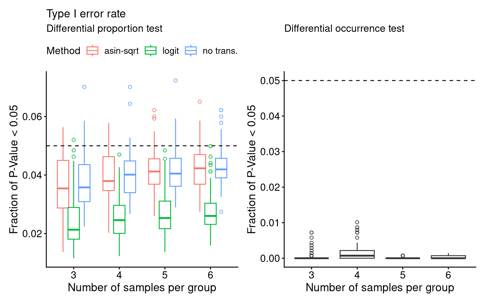
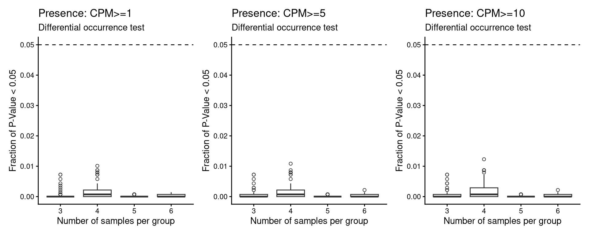
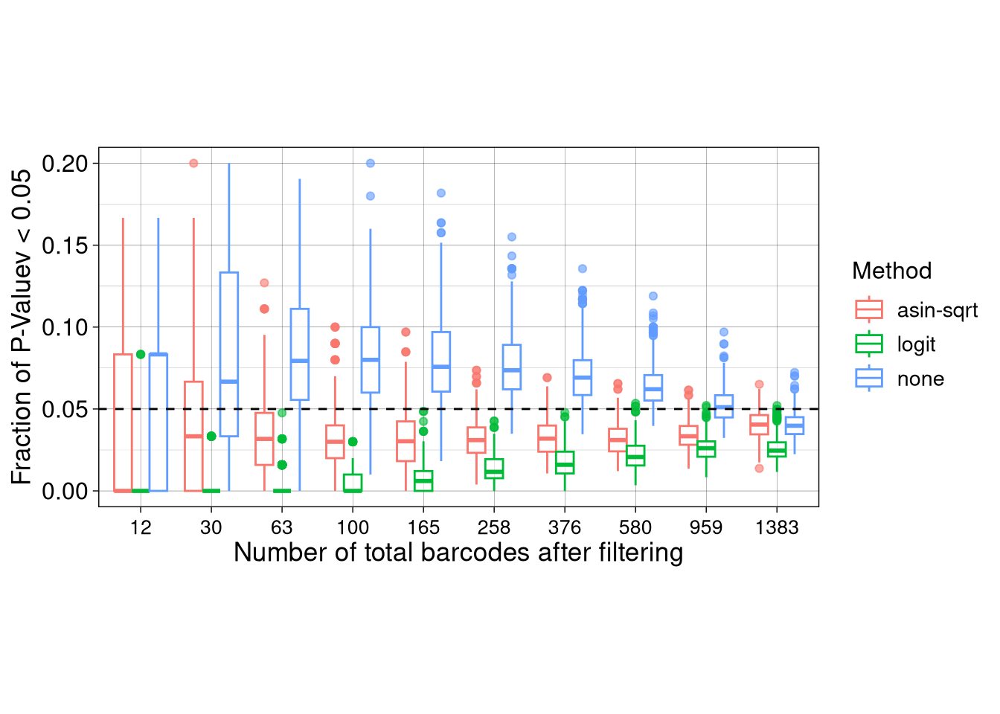
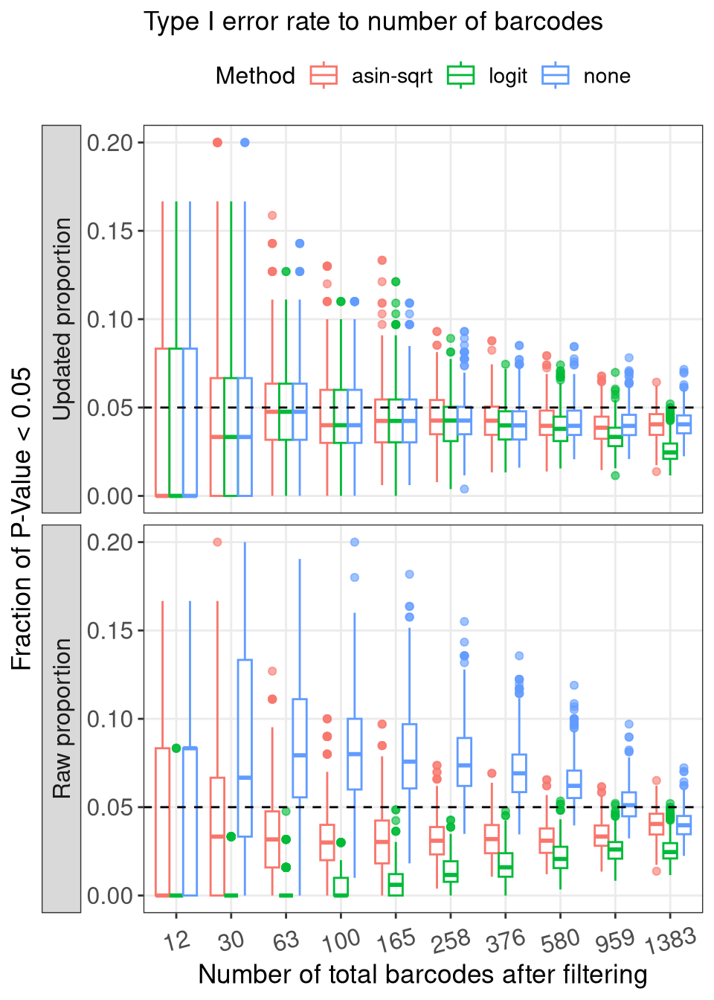
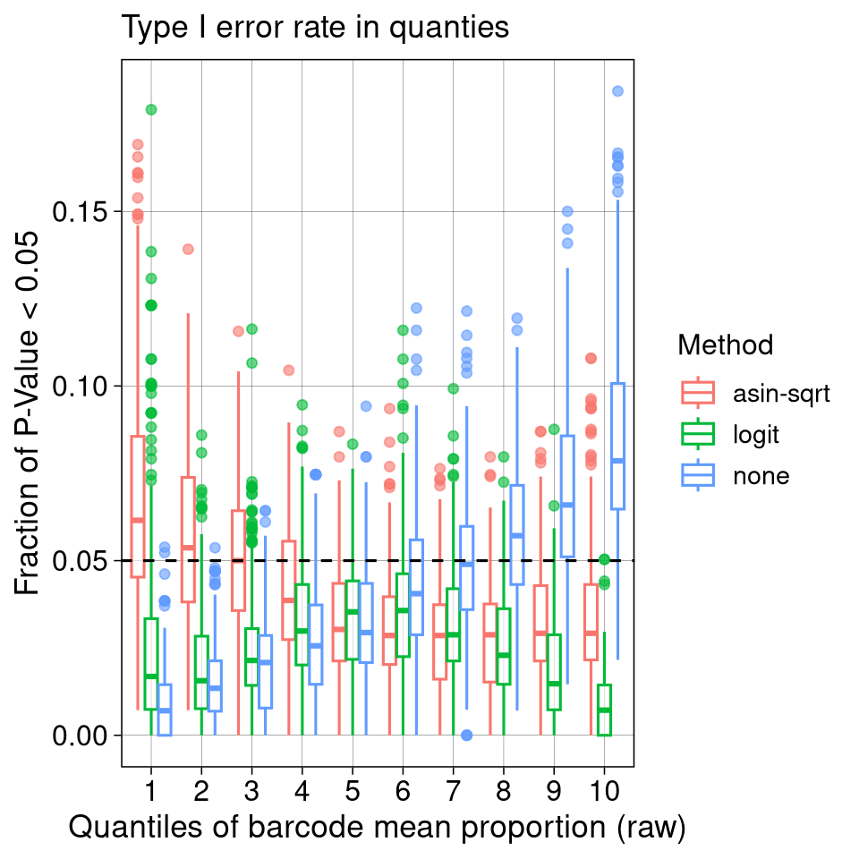
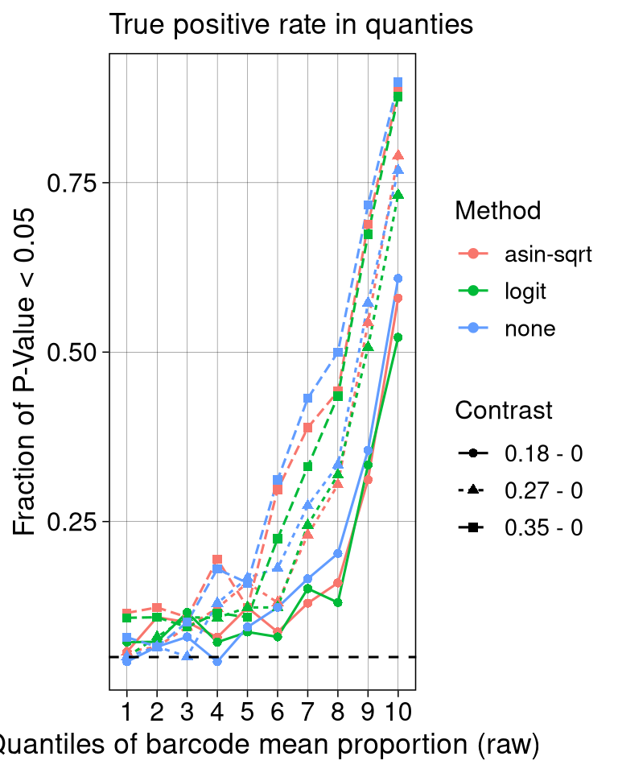
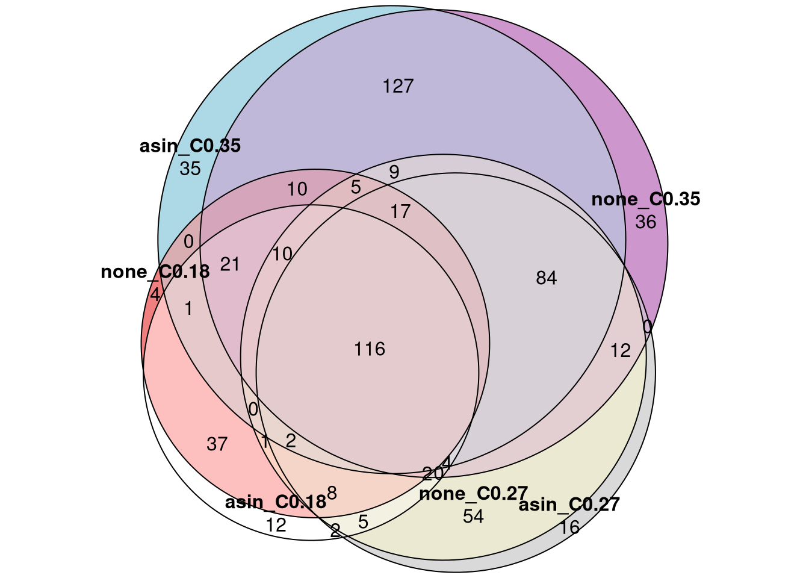
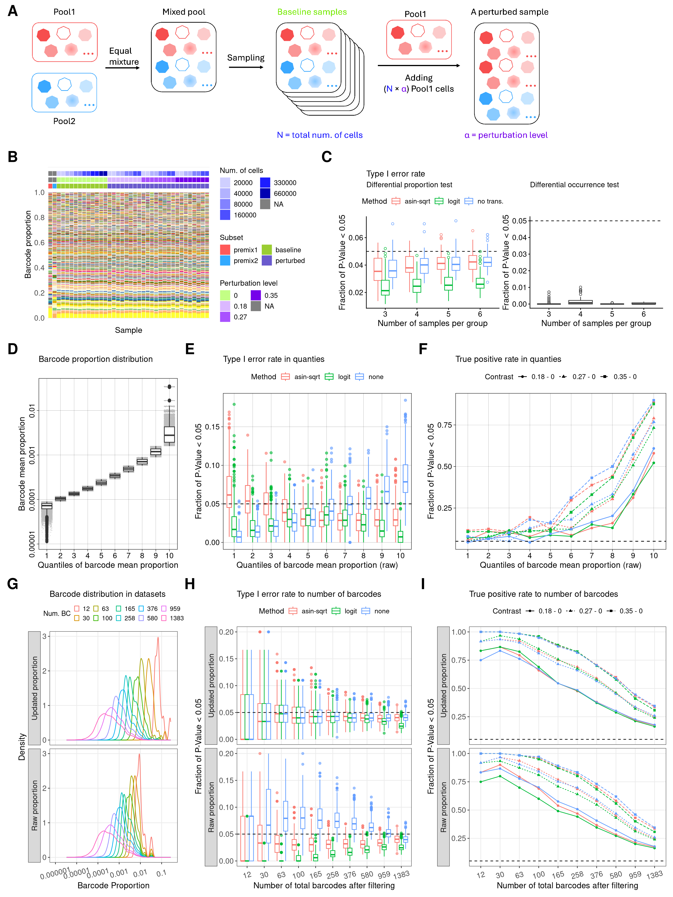

barbieQ_paper_Figure3_FigureS3: Type I
error rate and power using Mixture data
Liyang Fei
Initiate: 2025-09-07
Last update: 2026-06-12
Last updated: 2026-06-12
Checks: 5 2
Knit directory: public_barcode_count/
This reproducible R Markdown analysis was created with workflowr (version 1.7.2). The Checks tab describes the reproducibility checks that were applied when the results were created. The Past versions tab lists the development history.
The R Markdown file has unstaged changes. To know which version of
the R Markdown file created these results, you’ll want to first commit
it to the Git repo. If you’re still working on the analysis, you can
ignore this warning. When you’re finished, you can run
wflow_publish to commit the R Markdown file and build the
HTML.
The global environment had objects present when the code in the R
Markdown file was run. These objects can affect the analysis in your R
Markdown file in unknown ways. For reproduciblity it’s best to always
run the code in an empty environment. Use wflow_publish or
wflow_build to ensure that the code is always run in an
empty environment.
The following objects were defined in the global environment when these results were created:
| Name | Class | Size |
|---|---|---|
| module | function | 5.6 Kb |
The command set.seed(20250112) was run prior to running
the code in the R Markdown file. Setting a seed ensures that any results
that rely on randomness, e.g. subsampling or permutations, are
reproducible.
Great job! Recording the operating system, R version, and package versions is critical for reproducibility.
Nice! There were no cached chunks for this analysis, so you can be confident that you successfully produced the results during this run.
Great job! Using relative paths to the files within your workflowr project makes it easier to run your code on other machines.
Great! You are using Git for version control. Tracking code development and connecting the code version to the results is critical for reproducibility.
The results in this page were generated with repository version 6aa3ae7. See the Past versions tab to see a history of the changes made to the R Markdown and HTML files.
Note that you need to be careful to ensure that all relevant files for
the analysis have been committed to Git prior to generating the results
(you can use wflow_publish or
wflow_git_commit). workflowr only checks the R Markdown
file, but you know if there are other scripts or data files that it
depends on. Below is the status of the Git repository when the results
were generated:
Ignored files:
Ignored: .RData
Ignored: .Rhistory
Ignored: .Rproj.user/
Ignored: output/mixture_barbieQ.rda
Ignored: output/mixture_negative_simulation_cpm10.rda
Ignored: output/mixture_negative_simulation_cpm5.rda
Ignored: output/monkeyHSPC_barbieQ.rda
Ignored: output/monkeyHSPC_raw_barbieQ.rda
Ignored: public_barcode_count.Rproj
Untracked files:
Untracked: analysis/figure/
Untracked: output/barbieQ_figure1.png
Unstaged changes:
Modified: README.md
Modified: analysis/barbieQ_paper_Figure2.Rmd
Modified: analysis/barbieQ_paper_Figure3.Rmd
Modified: analysis/barbieQ_paper_Figure4.Rmd
Modified: analysis/barbieQ_paper_FigureS1_AML.Rmd
Modified: analysis/barbieQ_paper_FigureS1_Mixture.Rmd
Modified: analysis/barbieQ_paper_FigureS1_xenoHSPC.Rmd
Modified: analysis/barbieQ_paper_FigureS2_AML.Rmd
Modified: analysis/barbieQ_paper_FigureS2_xenoHSPC.Rmd
Deleted: output/barbieQ_figure1.drawio.png
Modified: output/f2.png
Modified: output/fdr_by_Nbc.rda
Modified: output/fs1_mixture.png
Modified: output/mixture_negative_simulation.rda
Staged changes:
New: output/fdr_by_Nbc.rda
New: output/mixture_negative_simulation.rda
Note that any generated files, e.g. HTML, png, CSS, etc., are not included in this status report because it is ok for generated content to have uncommitted changes.
These are the previous versions of the repository in which changes were
made to the R Markdown (analysis/barbieQ_paper_Figure3.Rmd)
and HTML (docs/barbieQ_paper_Figure3.html) files. If you’ve
configured a remote Git repository (see ?wflow_git_remote),
click on the hyperlinks in the table below to view the files as they
were in that past version.
| File | Version | Author | Date | Message |
|---|---|---|---|---|
| Rmd | fa4c3ce | FeiLiyang | 2026-04-27 | residual raw vs updated prop; relaxing occ threshold |
| html | fa4c3ce | FeiLiyang | 2026-04-27 | residual raw vs updated prop; relaxing occ threshold |
| Rmd | ee4c0a4 | FeiLiyang | 2026-04-27 | remove offset in Mixture, check residual variance |
| html | ee4c0a4 | FeiLiyang | 2026-04-27 | remove offset in Mixture, check residual variance |
| Rmd | 9d1d53a | FeiLiyang | 2026-01-11 | relabel f3 |
| html | 9d1d53a | FeiLiyang | 2026-01-11 | relabel f3 |
| Rmd | 5a5a065 | FeiLiyang | 2026-01-07 | minor change |
| Rmd | 54a5a00 | FeiLiyang | 2026-01-07 | supple analyses |
| Rmd | 1510b78 | FeiLiyang | 2026-01-01 | reorder f3 |
| html | 1510b78 | FeiLiyang | 2026-01-01 | reorder f3 |
| html | ca2c5fe | FeiLiyang | 2025-12-17 | fix yml |
| Rmd | 05a76fb | FeiLiyang | 2025-12-17 | update f3 fs4 |
| html | 05a76fb | FeiLiyang | 2025-12-17 | update f3 fs4 |
| Rmd | a383b23 | Liyang Fei | 2025-10-07 | remake figures |
1 Load Dependencies
library(readxl)
library(magrittr)
library(dplyr)
library(tidyr) # for pivot_longer
library(tibble) # for rownames_to _column
library(knitr) # for kable()
library(data.table) # for data.table()
library(SummarizedExperiment)
library(S4Vectors)
library(grid)
library(ggplot2)
library(ggbreak)
library(ggnewscale) # ggnewscale::new_scale_fill()
library(patchwork)
library(scales)
library(ggVennDiagram)
library(ComplexHeatmap)
library(magick) # image_read()
library(eulerr)
library(edgeR)
source("analysis/plotBarcodeHistogram.R") ## accommodated from bartools::plotBarcodehistogram
source("analysis/F3_simulation.R") ## for negative simulation
source("analysis/ggplot_theme.R") ## setting ggplot theme2 Install
barbieQ
Installing the latest devel version of barbieQ from
GitHub.
if (!requireNamespace("barbieQ", quietly = TRUE)) {
remotes::install_github("Oshlack/barbieQ")
}Warning: replacing previous import 'data.table::first' by 'dplyr::first' when
loading 'barbieQ'Warning: replacing previous import 'data.table::between' by 'dplyr::between'
when loading 'barbieQ'Warning: replacing previous import 'data.table::last' by 'dplyr::last' when
loading 'barbieQ'Warning: replacing previous import 'dplyr::as_data_frame' by
'igraph::as_data_frame' when loading 'barbieQ'Warning: replacing previous import 'dplyr::groups' by 'igraph::groups' when
loading 'barbieQ'Warning: replacing previous import 'dplyr::union' by 'igraph::union' when
loading 'barbieQ'library(barbieQ)Check the version of barbieQ.
packageVersion("barbieQ")[1] '1.5.4'3 Set seeds
set.seed(2025)4 Load data
load("output/mixture_barbieQ.rda")5 F3A: Experimental schematic
schematic <- image_read("output/f3a_schematic.png")
f3a <- rasterGrob(schematic, interpolate = FALSE)
wrap_elements(full = f3a)
| Version | Author | Date |
|---|---|---|
| 4998d01 | FeiLiyang | 2025-12-17 |
6 F3B: Plot barcode proportion and sample annotation
plotBarcodeHistogram, sourced from
“plotBarcodeHistogram.R”, is customized from the bartools
package.
## pull out sample designs
design_mixed <- mixture_top$sampleMetadata %>% as.data.frame()
design_mixed$sample <- colnames(mixture_top)
str(design_mixed)'data.frame': 38 obs. of 5 variables:
$ Subset : Factor w/ 4 levels "premix1","premix2",..: 1 2 3 3 3 3 3 3 3 3 ...
$ BarcodeSize : num NA NA 660000 660000 330000 330000 160000 160000 80000 80000 ...
$ Perturbation: num NA NA 0 0 0 0 0 0 0 0 ...
$ TechRep : Factor w/ 2 levels "1","2": 1 1 1 2 1 2 1 2 1 2 ...
$ sample : chr "P1" "P2" "null_660.1" "null_660.2" ...design_mixed$y = 1.05
color_mapping <- mixture_top@metadata$factorColors
## order samples
order_sample <- design_mixed %>% with(order(Subset, Perturbation, BarcodeSize))
mixed_dge <- DGEList(
counts = assay(mixture_top),
group = mixture_top$sampleMetadata$Subset)
## pull out ggplot data
p_mixed <- plotBarcodeHistogram(mixed_dge, orderSamples = colnames(mixture_top)[order_sample])Warning: Use of .data in tidyselect expressions was deprecated in tidyselect 1.2.0.
ℹ Please use `"barcode"` instead of `.data$barcode`
This warning is displayed once per session.
Call `lifecycle::last_lifecycle_warnings()` to see where this warning was
generated.Warning: Use of .data in tidyselect expressions was deprecated in tidyselect 1.2.0.
ℹ Please use `"value"` instead of `.data$value`
This warning is displayed once per session.
Call `lifecycle::last_lifecycle_warnings()` to see where this warning was
generated.Warning: Use of .data in tidyselect expressions was deprecated in tidyselect 1.2.0.
ℹ Please use `"name"` instead of `.data$name`
This warning is displayed once per session.
Call `lifecycle::last_lifecycle_warnings()` to see where this warning was
generated.Warning: Use of .data in tidyselect expressions was deprecated in tidyselect 1.2.0.
ℹ Please use `"freq"` instead of `.data$freq`
This warning is displayed once per session.
Call `lifecycle::last_lifecycle_warnings()` to see where this warning was
generated.p_mixed_illus <- p_mixed +
## label subset
ggnewscale::new_scale_fill() +
geom_tile(data = design_mixed, aes(x = sample,y = y, fill = Subset), height = 0.04, inherit.aes = FALSE, color = "white") +
scale_fill_manual(values = color_mapping$Subset, labels = c(null = "baseline", perturb = "perturbed")) +
labs(fill = "Subset") +
guides(fill = guide_legend(ncol = 2)) +
## label perturbations
ggnewscale::new_scale_fill() +
geom_tile(data = design_mixed, aes(x = sample,y = y+0.05, fill = as.factor(Perturbation)), height = 0.04, inherit.aes = FALSE, color = "white") +
scale_fill_manual(values = color_mapping$Perturbation) +
labs(fill = "Perturbation level") +
guides(fill = guide_legend(ncol = 2)) +
## label libsize
ggnewscale::new_scale_fill() +
geom_tile(data = design_mixed, aes(x = sample,y = y+0.10, fill = as.factor(BarcodeSize)), height = 0.04, inherit.aes = FALSE, color = "white") +
scale_fill_manual(values = color_mapping$BarcodeSize)+
labs(fill = "Num. of cells") +
guides(fill = guide_legend(ncol = 2)) +
labs(x = "Sample", y = "Barcode proportion") +
theme_minimal() +
scale_y_continuous(breaks = seq(0, 1, by = 0.2)) +
theme(axis.text.x = element_blank(), panel.grid.major.x = element_blank())
f3b <- p_mixed_illus +
theme(legend.title = element_text(size = 12), legend.text = element_text(size = 11), aspect.ratio = 1,
axis.title = element_text(size = 13), axis.text = element_text(size = 12)) +
guides(fill = guide_legend(ncol = 2))
f3bWarning: The `guide` argument in `scale_*()` cannot be `FALSE`. This was deprecated in
ggplot2 3.3.4.
ℹ Please use "none" instead.
This warning is displayed once per session.
Call `lifecycle::last_lifecycle_warnings()` to see where this warning was
generated.
7 FPR
Using mixture_top data, where an offset (one) was added to the raw count, based on which proportion was calculated. However the “top” barcodes were filtered based on the raw count data.
Here we subset the 12 “null” samples for evaluating FPR of diff_prop, and diff_occ methods.
Three transformations with dif_prop were evaluated separately.
- avoid running this chunk during rendering.
global_all_loopswas saved from the first run.
nulls <- mixture_top[, mixture_top$sampleMetadata$Subset == "null"]
results_negsi <- suppressMessages({
random_sampling(barbieQ = nulls, loop_times = 100)
})
## `random_sampling()` save the simulations to global environment
## as `global_all_loops`
save(global_all_loops, file = "output/mixture_negative_simulation.rda")
results_negsi[[1]] <- results_negsi[[1]] + ggtitle("Prop_asin, perturb_null")
results_negsi[[2]] <- results_negsi[[2]] + ggtitle("Prop_logit, perturb_null")
results_negsi[[3]] <- results_negsi[[3]] + ggtitle("Prop_noTrans, perturb_null")
results_negsi[[4]] <- results_negsi[[4]] + ggtitle("Occ_firth, perturb_null")
results_negsi[[5]] <- results_negsi[[5]] + ggtitle("Prop_asin, perturb_null")
results_negsi[[6]] <- results_negsi[[6]] + ggtitle("Prop_logit, perturb_null")
results_negsi[[7]] <- results_negsi[[7]] + ggtitle("Prop_noTrans, perturb_null")
results_negsi[[8]] <- results_negsi[[8]] + ggtitle("Occ_firth, perturb_null")
wrap_plots(results_negsi[1:8], ncol = 4)7.1 load results
## loading random sampling results to avoid running it repeatedly
load("output/mixture_negative_simulation.rda") # extract results from the loops
end_sampling <- 6
## extract FPR
all_FPR <- lapply(seq(3:end_sampling), function(n) {
global_all_loops[[n]]$FPR
})
df_FPR <- do.call(rbind, all_FPR)
## extract P.Val
all_P.Val <- lapply(seq(3:end_sampling), function(n) {
global_all_loops[[n]]$P.Val
})
df_P.Val <- do.call(rbind, all_P.Val)
## extract MA
all_MA <- lapply(seq(3:end_sampling), function(n) {
global_all_loops[[n]]$MA
})
df_MA <- do.call(rbind, all_MA)
all_Group_Vec <- lapply(seq(3:end_sampling), function(n) {
global_all_loops[[n]]$Group_Vec
})
df_Group_Vec <- do.call(rbind, all_Group_Vec)
stats_barcodes <- cbind(df_P.Val[,1:4], df_MA)7.2 F3C: Type I Error Rate
- Diff_prop
df_FPR$N_Samples <- as.factor(df_FPR$N_Samples)
## reshape the data to fit methods for testing
df_FPR_long <- df_FPR %>%
pivot_longer(cols = starts_with("Prop_"),
names_to = "Method",
values_to = "Pval_Prop") %>%
mutate(Method = factor(Method, levels = c("Prop_asin", "Prop_logit", "Prop_noTrans"),
labels = c("asin-sqrt", "logit", "no trans.")))
P_FPR_prop <- ggplot(
df_FPR_long, aes(x = factor(N_Samples), y = Pval_Prop, color = Method)) +
geom_boxplot(outlier.shape = 1, position = position_dodge(width = 0.7)) +
# geom_jitter(size = 1, position = position_dodge(width = 0.7)) +
geom_hline(yintercept = 0.05, linetype = "dashed", color = "black") +
# coord_cartesian(ylim = c(0, 0.2)) +
labs(
y = "Fraction of P-Value < 0.05",
x = "Number of samples per group",
title = "Type I error rate",
subtitle = "Differential proportion test") +
# facet_wrap(~Method, scales = "free_y") +
theme_classic() +
theme(legend.position = "top")- Diff_occ based on barcode presence / absence determined by threshold of CPM=1 as default, preprocessing Mixture.
P_FPR_occ <- ggplot(
df_FPR, aes(x = factor(N_Samples), y = Occ_firth)) +
geom_boxplot(outlier.shape = 1, position = position_dodge(width = 0.7)) +
# geom_jitter(size = 1, position = position_dodge(width = 0.7)) +
geom_hline(yintercept = 0.05, linetype = "dashed", color = "black") +
scale_color_manual(values = c("Differential occurrrence test" = "black")) +
# coord_cartesian(ylim = c(0, 0.2)) +
labs(
y = "Fraction of P-Value < 0.05",
x = "Number of samples per group",
titlte = "",
subtitle = "Differential occurrence test") +
theme_classic() +
theme(legend.position = "top")f3c <- (P_FPR_prop + theme_barbieQ_size() + theme(legend.position = "top")) +
(P_FPR_occ + theme_barbieQ_size())
f3cIgnoring unknown labels:
• titlte : ""Warning: No shared levels found between `names(values)` of the manual scale and the
data's colour values.
7.2.1 Relaxed occurrence
In Figure 3C we test differential occurrence based on presence determined by CPM >=1 or <1.
The actual library size of the Mixture data size is at ~0.2M. Here we use more relaxed thresholds for occurrence, and assess their effects on differential occurrence test.
mixture %>% assay() %>% colSums() P1 P2 null_660.1 null_660.2
235440 782630 372742 378417
null_330.1 null_330.2 null_160.1 null_160.2
331719 299137 222502 210015
null_80.1 null_80.2 null_40.1 null_40.2
231811 225673 98039 94663
null_20.1 null_20.2 m_null_160.p35.1 m_null_160.p27.1
78407 97822 232568 187505
m_null_160.p18.1 m_null_160.p35.2 m_null_160.p27.2 m_null_160.p18.2
194316 183723 187687 197449
m_null_80.p35.1 m_null_80.p27.1 m_null_80.p18.1 m_null_80.p35.2
184250 208877 192715 207060
m_null_80.p27.2 m_null_80.p18.2 m_null_40.p35.1 m_null_40.p27.1
177720 196797 188934 184181
m_null_40.p18.1 m_null_40.p35.2 m_null_40.p27.2 m_null_40.p18.2
223559 203016 197162 211529
m_null_20.p35.1 m_null_20.p27.1 m_null_20.p18.1 m_null_20.p35.2
211542 214020 197308 204403
m_null_20.p27.2 m_null_20.p18.2
189931 180812 1000000 / mixture %>% assay() %>% colSums() P1 P2 null_660.1 null_660.2
4.247367 1.277743 2.682821 2.642587
null_330.1 null_330.2 null_160.1 null_160.2
3.014600 3.342950 4.494342 4.761565
null_80.1 null_80.2 null_40.1 null_40.2
4.313859 4.431190 10.200022 10.563789
null_20.1 null_20.2 m_null_160.p35.1 m_null_160.p27.1
12.753963 10.222649 4.299818 5.333191
m_null_160.p18.1 m_null_160.p35.2 m_null_160.p27.2 m_null_160.p18.2
5.146257 5.442977 5.328020 5.064599
m_null_80.p35.1 m_null_80.p27.1 m_null_80.p18.1 m_null_80.p35.2
5.427408 4.787507 5.189010 4.829518
m_null_80.p27.2 m_null_80.p18.2 m_null_40.p35.1 m_null_40.p27.1
5.626829 5.081378 5.292854 5.429442
m_null_40.p18.1 m_null_40.p35.2 m_null_40.p27.2 m_null_40.p18.2
4.473092 4.925720 5.071971 4.727484
m_null_20.p35.1 m_null_20.p27.1 m_null_20.p18.1 m_null_20.p35.2
4.727194 4.672461 5.068218 4.892296
m_null_20.p27.2 m_null_20.p18.2
5.265070 5.530606 update_occ <- function(barbieQ, CPM = 1){
barbieQ@assays@data$occurrence <- barbieQ@assays@data$CPM >=CPM
return(barbieQ)
}7.2.1.1 Presence: CPM >= 5
avoid running this chunk during rendering.
global_all_loops was saved from the first run.
mixture_top_cpm5 <- update_occ(mixture_top, CPM = 5)
results_negsi_cpm5 <- suppressMessages({
random_sampling(
barbieQ = mixture_top_cpm5[, mixture_top_cpm5$sampleMetadata$Subset == "null"],
loop_times = 100)
})
## `random_sampling()` save the simulations to global environment
## as `global_all_loops`
save(global_all_loops, file = "output/mixture_negative_simulation_cpm5.rda")
results_negsi_cpm5[[4]] <- results_negsi_cpm5[[4]] + ggtitle("Occ_firth, perturb_null")
results_negsi_cpm5[[8]] <- results_negsi_cpm5[[8]] + ggtitle("Occ_firth, perturb_null")
wrap_plots(results_negsi_cpm5[c(4,8)], ncol = 2)## loading random sampling results to avoid running it repeatedly
load("output/mixture_negative_simulation_cpm5.rda") # extract results from the loops
end_sampling <- 6
## extract FPR
all_FPR_cpm5 <- lapply(seq(3:end_sampling), function(n) {
global_all_loops[[n]]$FPR
})
df_FPR_cpm5 <- do.call(rbind, all_FPR_cpm5)
## extract P.Val
all_P.Val_cpm5 <- lapply(seq(3:end_sampling), function(n) {
global_all_loops[[n]]$P.Val
})
df_P.Val_cpm5 <- do.call(rbind, all_P.Val_cpm5)
## extract MA
all_MA_cpm5 <- lapply(seq(3:end_sampling), function(n) {
global_all_loops[[n]]$MA
})
df_MA_cpm5 <- do.call(rbind, all_MA_cpm5)
all_Group_Vec_cpm5 <- lapply(seq(3:end_sampling), function(n) {
global_all_loops[[n]]$Group_Vec
})
df_Group_Vec_cpm5 <- do.call(rbind, all_Group_Vec_cpm5)
stats_barcodes_cpm5 <- cbind(df_P.Val_cpm5[,1:4], df_MA_cpm5)df_FPR_cpm5$N_Samples <- as.factor(df_FPR_cpm5$N_Samples)
## reshape the data to fit methods for testing
df_FPR_long_cpm5 <- df_FPR_cpm5 %>%
pivot_longer(cols = starts_with("Prop_"),
names_to = "Method",
values_to = "Pval_Prop") %>%
mutate(Method = factor(Method, levels = c("Prop_asin", "Prop_logit", "Prop_noTrans"),
labels = c("asin-sqrt", "logit", "no trans.")))
p_FPR_occ_cpm5 <- ggplot(
df_FPR_cpm5, aes(x = factor(N_Samples), y = Occ_firth)) +
geom_boxplot(outlier.shape = 1, position = position_dodge(width = 0.7)) +
# geom_jitter(size = 1, position = position_dodge(width = 0.7)) +
geom_hline(yintercept = 0.05, linetype = "dashed", color = "black") +
scale_color_manual(values = c("Differential occurrrence test" = "black")) +
# coord_cartesian(ylim = c(0, 0.2)) +
labs(
y = "Fraction of P-Value < 0.05",
x = "Number of samples per group",
titlte = "Presence: CPM>=5",
subtitle = "Differential occurrence test") +
theme_classic() +
theme(legend.position = "top")
p_FPR_occ_cpm5Ignoring unknown labels:
• titlte : "Presence: CPM>=5"Warning: No shared levels found between `names(values)` of the manual scale and the
data's colour values.
7.2.1.2 Presence: CPM >= 10
avoid running this chunk during rendering.
global_all_loops was saved from the first run.
mixture_top_cpm10 <- update_occ(mixture_top, CPM = 10)
results_negsi_cpm10 <- suppressMessages({
random_sampling(
barbieQ = mixture_top_cpm10[, mixture_top_cpm10$sampleMetadata$Subset == "null"],
loop_times = 100)
})
## `random_sampling()` save the simulations to global environment
## as `global_all_loops`
save(global_all_loops, file = "output/mixture_negative_simulation_cpm10.rda")
results_negsi_cpm10[[4]] <- results_negsi_cpm10[[4]] + ggtitle("Occ_firth, perturb_null")
results_negsi_cpm10[[8]] <- results_negsi_cpm10[[8]] + ggtitle("Occ_firth, perturb_null")
wrap_plots(results_negsi_cpm10[c(4,8)], ncol = 2)## loading random sampling results to avoid running it repeatedly
load("output/mixture_negative_simulation_cpm10.rda") # extract results from the loops
end_sampling <- 6
## extract FPR
all_FPR_cpm10 <- lapply(seq(3:end_sampling), function(n) {
global_all_loops[[n]]$FPR
})
df_FPR_cpm10 <- do.call(rbind, all_FPR_cpm10)
## extract P.Val
all_P.Val_cpm10 <- lapply(seq(3:end_sampling), function(n) {
global_all_loops[[n]]$P.Val
})
df_P.Val_cpm10 <- do.call(rbind, all_P.Val_cpm10)
## extract MA
all_MA_cpm10 <- lapply(seq(3:end_sampling), function(n) {
global_all_loops[[n]]$MA
})
df_MA_cpm10 <- do.call(rbind, all_MA_cpm10)
all_Group_Vec_cpm10 <- lapply(seq(3:end_sampling), function(n) {
global_all_loops[[n]]$Group_Vec
})
df_Group_Vec_cpm10 <- do.call(rbind, all_Group_Vec_cpm10)
stats_barcodes_cpm10 <- cbind(df_P.Val_cpm10[,1:4], df_MA_cpm10)df_FPR_cpm10$N_Samples <- as.factor(df_FPR_cpm10$N_Samples)
## reshape the data to fit methods for testing
df_FPR_long_cpm10 <- df_FPR_cpm10 %>%
pivot_longer(cols = starts_with("Prop_"),
names_to = "Method",
values_to = "Pval_Prop") %>%
mutate(Method = factor(Method, levels = c("Prop_asin", "Prop_logit", "Prop_noTrans"),
labels = c("asin-sqrt", "logit", "no trans.")))
p_FPR_occ_cpm10 <- ggplot(
df_FPR_cpm10, aes(x = factor(N_Samples), y = Occ_firth)) +
geom_boxplot(outlier.shape = 1, position = position_dodge(width = 0.7)) +
# geom_jitter(size = 1, position = position_dodge(width = 0.7)) +
geom_hline(yintercept = 0.05, linetype = "dashed", color = "black") +
scale_color_manual(values = c("Differential occurrrence test" = "black")) +
# coord_cartesian(ylim = c(0, 0.2)) +
labs(
y = "Fraction of P-Value < 0.05",
x = "Number of samples per group",
titlte = "Presence: CPM>=10",
subtitle = "Differential occurrence test") +
theme_classic() +
theme(legend.position = "top")
p_FPR_occ_cpm10Ignoring unknown labels:
• titlte : "Presence: CPM>=10"Warning: No shared levels found between `names(values)` of the manual scale and the
data's colour values.
| Version | Author | Date |
|---|---|---|
| fa4c3ce | FeiLiyang | 2026-04-27 |
7.2.1.3 Comparison between thresholds
(P_FPR_occ + labs(title = "Presence: CPM>=1")) +
(p_FPR_occ_cpm5 + labs(title = "Presence: CPM>=5")) +
(p_FPR_occ_cpm10 + labs(title = "Presence: CPM>=10"))Ignoring unknown labels:
• titlte : ""Warning: No shared levels found between `names(values)` of the manual scale and the
data's colour values.Ignoring unknown labels:
• titlte : "Presence: CPM>=5"Warning: No shared levels found between `names(values)` of the manual scale and the
data's colour values.Ignoring unknown labels:
• titlte : "Presence: CPM>=10"Warning: No shared levels found between `names(values)` of the manual scale and the
data's colour values.
Load the original testing result again.
## loading random sampling results to avoid running it repeatedly
load("output/mixture_negative_simulation.rda")7.3 F3H: Type I Error Rate as a function to N_BC
7.3.1 Generate subsets of barcodes
## with different filtering thresholds, how many "top" barcodes do we get
1:9/10[1] 0.1 0.2 0.3 0.4 0.5 0.6 0.7 0.8 0.9lapply(
c(1:9/10, 0.95),
function(filter_level) {
mixture <- tagTopBarcodes(mixture, nSampleThreshold = 8, proportionThreshold = filter_level)
paste0("filter_thresh=", filter_level, "; N_barcodes=", sum(rowData(mixture)$isTopBarcode$isTop)) %>% print()
# plotBarcodeSankey(mixture)
return(
sum(rowData(mixture)$isTopBarcode$isTop)
)
}
) %>% unlist() %>%
setNames(nm = c(1:9/10, 0.95)) ->
filter_to_N[1] "filter_thresh=0.1; N_barcodes=12"
[1] "filter_thresh=0.2; N_barcodes=30"
[1] "filter_thresh=0.3; N_barcodes=63"
[1] "filter_thresh=0.4; N_barcodes=100"
[1] "filter_thresh=0.5; N_barcodes=165"
[1] "filter_thresh=0.6; N_barcodes=258"
[1] "filter_thresh=0.7; N_barcodes=376"
[1] "filter_thresh=0.8; N_barcodes=580"
[1] "filter_thresh=0.9; N_barcodes=959"
[1] "filter_thresh=0.95; N_barcodes=1383"filter_to_N 0.1 0.2 0.3 0.4 0.5 0.6 0.7 0.8 0.9 0.95
12 30 63 100 165 258 376 580 959 1383 names(filter_to_N) %>% str() chr [1:10] "0.1" "0.2" "0.3" "0.4" "0.5" "0.6" "0.7" "0.8" "0.9" "0.95"7.3.2 Update proportion
## Compute medians per bin/method/N_Samples
method_labels <- c(
"Prop_asin" = "asin-sqrt",
"Prop_logit" = "logit",
"Prop_noTrans" = "none"
)- avoid running this chunk during rendering.
stats_barcodes_all_levelswas saved from the first run.
stats_barcodes_all_levels <- lapply(
c(1:9/10, 0.95),
function(i) {
stats_barcodes_i <- get_null_sample_by_filter(mixture, i, loop_times = 100)
stats_barcodes_i$filter_level <- i
stats_barcodes_i$N_BC <- filter_to_N[i %>% as.character()]
return(stats_barcodes_i)
}
)
stats_barcodes_all_levels <- do.call(rbind, stats_barcodes_all_levels)
save(stats_barcodes_all_levels, file = "output/fdr_by_Nbc.rda")load("output/fdr_by_Nbc.rda")
FPR_box <- stats_barcodes_all_levels %>%
pivot_longer(
cols = c(Prop_asin, Prop_logit, Prop_noTrans),
names_to = "method",
values_to = "pvalue"
) %>%
group_by(method, N_Samples, N_BC, Loop_N) %>%
summarize(N_signif = sum(pvalue < 0.05), Frac_signif = sum(pvalue < 0.05) / n(), .groups = "drop") %>%
mutate(Method = recode(method, !!!method_labels))
ggplot(FPR_box, aes(x = as.factor(N_BC), y = Frac_signif, color = Method, group = paste0(N_BC, Method))) +
geom_boxplot(alpha = 0.6, position = position_dodge(), outliers = T) +
labs(
x = paste0("Number of total barcodes after filtering"),
y = "Fraction of P-Value < 0.05", color = "Method", shape = "N_sample", linetype = "N_sample",
title = "Type I Error Rate as a function to number of barcodes"
) +
geom_hline(yintercept = 0.05, linetype = "dashed") +
# facet_wrap(~N_Samples, ncol =4) +
theme_linedraw()+
theme(axis.text.x = element_text(angle = 0, vjust = 0.5, size = 10, hjust = 0.5), aspect.ratio = 0.5) +
theme(
legend.title = element_text(size = 12), legend.text = element_text(size = 11),
axis.title = element_text(size = 13), axis.text = element_text(size = 12)) +
scale_y_continuous(limits = c(0,0.2))Ignoring unknown labels:
• shape : "N_sample"
• linetype : "N_sample"Warning: Removed 81 rows containing non-finite outside the scale range
(`stat_boxplot()`).
7.3.3 Raw proportion
## saving all p.vals from the N=1383 (proportionThreshold = 0.95) simulation
# df_P.Val
mixture <- tagTopBarcodes(mixture, nSampleThreshold = 8, proportionThreshold = 0.95)
## get the subset of barcodes
lapply(c(1:9/10, 0.95), function(filter_level) {
barbieQ <- tagTopBarcodes(mixture, nSampleThreshold = 8, proportionThreshold = filter_level)
tag <- rowData(barbieQ)$isTopBarcode$isTop
tag <- tag[mixture@elementMetadata$isTopBarcode$isTop]
return(tag)
}) -> BC_set_by_filter
BC_set_by_filter <- do.call(cbind, BC_set_by_filter)
colnames(BC_set_by_filter) <- filter_to_N[c(1:9/10, 0.95) %>% as.character()]
## check
colSums(BC_set_by_filter) 12 30 63 100 165 258 376 580 959 1383
12 30 63 100 165 258 376 580 959 1383 mean_prop <- rowMeans(mixture[mixture@elementMetadata$isTopBarcode$isTop,mixture$sampleMetadata$Subset=="null"]@assays@data$proportion)
## testing results obtained from raw proportin in stats_barcodes
df_P.Val_filter_tag <- cbind(
stats_barcodes, # testing results obtained from raw proportin
mean_prop,
BC_set_by_filter[
rep(
seq_len(nrow(BC_set_by_filter)),
length.out = nrow(stats_barcodes)
),
]
)Warning in data.frame(..., check.names = FALSE): row names were found from a
short variable and have been discardedFPR_box_raw <- df_P.Val_filter_tag %>%
pivot_longer(
cols = c(Prop_asin, Prop_logit, Prop_noTrans),
names_to = "method",
values_to = "pvalue"
) %>%
pivot_longer(
cols = as.character(filter_to_N[c(1:9/10, 0.95) %>% as.character()]),
names_to = "N_BC",
values_to = "selectedBy"
) %>%
group_by(method, N_Samples, Loop_N, N_BC) %>%
summarize(
N_signif = sum(pvalue < 0.05 & selectedBy),
Frac_signif = sum(pvalue < 0.05 & selectedBy) / sum(selectedBy), .groups = "drop") %>%
mutate(Method = recode(method, !!!method_labels))
FPR_box_raw$N_BC <- as.numeric(FPR_box_raw$N_BC)
ggplot(FPR_box_raw, aes(x= as.factor(N_BC), y = Frac_signif, color = Method, group = paste0(Method, N_BC))) +
geom_boxplot(alpha = 0.6, position = position_dodge(), outliers = T) +
labs(
x = paste0("Number of total barcodes after filtering"),
y = "Fraction of P-Valuev < 0.05", color = "Method", shape = "N_sample", linetype = "N_sample"
) +
geom_hline(yintercept = 0.05, linetype = "dashed") +
# facet_wrap(~N_Samples, ncol =4) +
theme_linedraw()+
theme(axis.text.x = element_text(angle = 0, vjust = 0.5, size = 10, hjust = 0.5), aspect.ratio = 0.5) +
theme_barbieQ_size() +
scale_y_continuous(limits = c(0,0.2)) ## y scale zoom inIgnoring unknown labels:
• shape : "N_sample"
• linetype : "N_sample"Warning: Removed 72 rows containing non-finite outside the scale range
(`stat_boxplot()`).
| Version | Author | Date |
|---|---|---|
| fa4c3ce | FeiLiyang | 2026-04-27 |
rbind(
data.frame(FPR_box_raw, prop_type = "Raw proportion"),
data.frame(FPR_box, prop_type = "Updated proportion")
) %>%
mutate(prop_type = factor(prop_type, levels = c("Updated proportion", "Raw proportion"))) %>%
## plot
ggplot(aes(x = as.factor(N_BC), y = Frac_signif, color = Method, group = paste0(N_BC, Method))) +
geom_boxplot(alpha = 0.6, position = position_dodge(), outliers = T) +
labs(
x = paste0("Number of total barcodes after filtering"),
y = "Fraction of P-Value < 0.05", color = "Method", shape = "N_sample", linetype = "N_sample",
title = "Type I error rate to number of barcodes"
) +
geom_hline(yintercept = 0.05, linetype = "dashed") +
facet_grid(prop_type~1, switch = "y") +
theme_bw()+
theme_barbieQ_size() +
theme(panel.grid.minor = element_blank(), axis.text.x = element_text(angle = 15, vjust = 0.5, hjust = 0.5),
legend.position = "top",
strip.placement = "outside", strip.text.y = element_text(size = 12),
strip.text.x = element_blank(), strip.background.x = element_blank()) +
scale_y_continuous(limits = c(0,0.2)) -> f3h
## scale_x_discrete(limits = rev) ## reverse x axis
f3hIgnoring unknown labels:
• shape : "N_sample"
• linetype : "N_sample"Warning: Removed 153 rows containing non-finite outside the scale range
(`stat_boxplot()`).
7.4 F3G: Density to N_Barcodes
7.4.1 Updated proportion
## get the subset of barcodes
lapply(c(1:9/10, 0.95), function(filter_level) {
barbieQ <- tagTopBarcodes(mixture, nSampleThreshold = 8, proportionThreshold = filter_level)
tag <- rowData(barbieQ)$isTopBarcode$isTop
prop_mat <- mixture[tag,mixture$sampleMetadata$Subset=="null"]@assays@data$proportion
## update prop
prop_mat <- t(t(prop_mat) / colSums(prop_mat))
df <- data.frame(
prop = as.vector(prop_mat),
N_BC=filter_to_N[as.character(filter_level)]
)
return(df)
}) -> BC_set_prop_filterWarning in data.frame(prop = as.vector(prop_mat), N_BC =
filter_to_N[as.character(filter_level)]): row names were found from a short
variable and have been discarded
Warning in data.frame(prop = as.vector(prop_mat), N_BC =
filter_to_N[as.character(filter_level)]): row names were found from a short
variable and have been discarded
Warning in data.frame(prop = as.vector(prop_mat), N_BC =
filter_to_N[as.character(filter_level)]): row names were found from a short
variable and have been discarded
Warning in data.frame(prop = as.vector(prop_mat), N_BC =
filter_to_N[as.character(filter_level)]): row names were found from a short
variable and have been discarded
Warning in data.frame(prop = as.vector(prop_mat), N_BC =
filter_to_N[as.character(filter_level)]): row names were found from a short
variable and have been discarded
Warning in data.frame(prop = as.vector(prop_mat), N_BC =
filter_to_N[as.character(filter_level)]): row names were found from a short
variable and have been discarded
Warning in data.frame(prop = as.vector(prop_mat), N_BC =
filter_to_N[as.character(filter_level)]): row names were found from a short
variable and have been discarded
Warning in data.frame(prop = as.vector(prop_mat), N_BC =
filter_to_N[as.character(filter_level)]): row names were found from a short
variable and have been discarded
Warning in data.frame(prop = as.vector(prop_mat), N_BC =
filter_to_N[as.character(filter_level)]): row names were found from a short
variable and have been discarded
Warning in data.frame(prop = as.vector(prop_mat), N_BC =
filter_to_N[as.character(filter_level)]): row names were found from a short
variable and have been discardedBC_set_prop_filter <- do.call(rbind, BC_set_prop_filter)
ggplot(BC_set_prop_filter) +
geom_density(aes(x = prop, color = as.factor(N_BC), group = as.factor(N_BC))) +
scale_x_log10(breaks = 10^seq(-6, -1, by = 1), labels = strip_zeros) +
coord_cartesian(xlim = c(1e-6, 3e-1)) +
labs(color = "Num. BC", x = "Barcode Proportion", y = "Density", subtitle = "with updated proportion") +
theme_barbieQ() +
theme(aspect.ratio = 0.9) -> f3g17.4.2 Raw proportion
## get the subset of barcodes
lapply(c(1:9/10, 0.95), function(filter_level) {
barbieQ <- tagTopBarcodes(mixture, nSampleThreshold = 8, proportionThreshold = filter_level)
tag <- rowData(barbieQ)$isTopBarcode$isTop
## keep raw prop
prop_mat <- mixture[tag,mixture$sampleMetadata$Subset=="null"]@assays@data$proportion
df <- data.frame(
prop = as.vector(prop_mat),
N_BC=filter_to_N[as.character(filter_level)]
)
return(df)
}) -> BC_set_prop_filter_rawWarning in data.frame(prop = as.vector(prop_mat), N_BC =
filter_to_N[as.character(filter_level)]): row names were found from a short
variable and have been discarded
Warning in data.frame(prop = as.vector(prop_mat), N_BC =
filter_to_N[as.character(filter_level)]): row names were found from a short
variable and have been discarded
Warning in data.frame(prop = as.vector(prop_mat), N_BC =
filter_to_N[as.character(filter_level)]): row names were found from a short
variable and have been discarded
Warning in data.frame(prop = as.vector(prop_mat), N_BC =
filter_to_N[as.character(filter_level)]): row names were found from a short
variable and have been discarded
Warning in data.frame(prop = as.vector(prop_mat), N_BC =
filter_to_N[as.character(filter_level)]): row names were found from a short
variable and have been discarded
Warning in data.frame(prop = as.vector(prop_mat), N_BC =
filter_to_N[as.character(filter_level)]): row names were found from a short
variable and have been discarded
Warning in data.frame(prop = as.vector(prop_mat), N_BC =
filter_to_N[as.character(filter_level)]): row names were found from a short
variable and have been discarded
Warning in data.frame(prop = as.vector(prop_mat), N_BC =
filter_to_N[as.character(filter_level)]): row names were found from a short
variable and have been discarded
Warning in data.frame(prop = as.vector(prop_mat), N_BC =
filter_to_N[as.character(filter_level)]): row names were found from a short
variable and have been discarded
Warning in data.frame(prop = as.vector(prop_mat), N_BC =
filter_to_N[as.character(filter_level)]): row names were found from a short
variable and have been discardedBC_set_prop_filter_raw <- do.call(rbind, BC_set_prop_filter_raw)
ggplot(BC_set_prop_filter_raw) +
geom_density(aes(x = prop, color = as.factor(N_BC), group = as.factor(N_BC))) +
scale_x_log10(breaks = 10^seq(-6, -1, by = 1), labels = strip_zeros) +
coord_cartesian(xlim = c(1e-6, 3e-1)) +
theme_linedraw() +
labs(color = "Num. BC", x = "Barcode Proportion", y = "Density", subtitle = "with raw proportion") +
theme_barbieQ() +
theme(aspect.ratio = 0.9) -> f3g2rbind(
data.frame(BC_set_prop_filter_raw, prop_type = "Raw proportion"),
data.frame(BC_set_prop_filter, prop_type = "Updated proportion")
) %>%
mutate(prop_type = factor(prop_type, levels = c("Updated proportion", "Raw proportion"))) %>%
## pass to gplot
ggplot() +
geom_density(aes(x = prop, color = as.factor(N_BC), group = as.factor(N_BC))) +
scale_x_log10(breaks = 10^seq(-6, -1, by = 1), labels = strip_zeros) +
coord_cartesian(xlim = c(1e-6, 3e-1)) +
facet_grid(prop_type~1, switch = "y") +
labs(color = "Num. BC", x = "Barcode Proportion", y = "Density", title = "Barcode distribution in datasets") +
theme_bw() +
theme_barbieQ_size() +
theme(panel.grid.minor = element_blank(), axis.text.x = element_text(angle = 15, vjust = 0.5, hjust = 0.5),
legend.position = "top", legend.key.size = unit(0.3, "cm"),
legend.title = element_text(size = 11), legend.text = element_text(size = 10),
strip.placement = "outside", strip.text.y = element_text(size = 12),
strip.text.x = element_blank(), strip.background.x = element_blank()) -> ## disable column label
f3g
f3gWarning in scale_x_log10(breaks = 10^seq(-6, -1, by = 1), labels =
strip_zeros): log-10 transformation introduced infinite values.Warning: Removed 1640 rows containing non-finite outside the scale range
(`stat_density()`).
7.5 F3D: Quantile distribution
data.frame(x = (stats_barcodes_all_levels %>% filter(filter_level==0.95))$Amean_prop) %>%
mutate(quantile_bin = ntile(x, 10)) %>%
ggplot(aes(x = as.factor(quantile_bin), y = x, group = quantile_bin)) +
geom_jitter(color = "grey", shape = ".") +
geom_boxplot() +
scale_y_log10(breaks = 10^seq(-5, -1, by = 1), labels = strip_zeros) +
theme_barbieQ() +
labs(x = "Quantiles of barcode mean proportion", y = "Barcode mean proportion",
title = "Barcode proportion distribution", subtitle = " ") +
theme(axis.text.y = element_text(angle = 90, vjust = 0.5, hjust = 0.5)) -> f3d
f3d
7.6 F3E: False positives in quantiles
- For diff_prop
# plot_fdr_on_quantile(stats_barcodes_all_levels %>% filter(filter_level==0.1), num_quantiles = 4)
# plot_fdr_on_quantile(stats_barcodes_all_levels %>% filter(filter_level==0.2), num_quantiles = 10)
# plot_fdr_on_quantile(stats_barcodes_all_levels %>% filter(filter_level==0.3), num_quantiles = 10)
# plot_fdr_on_quantile(stats_barcodes_all_levels %>% filter(filter_level==0.4), num_quantiles = 10)
# plot_fdr_on_quantile(stats_barcodes_all_levels %>% filter(filter_level==0.5), num_quantiles = 10)
# plot_fdr_on_quantile(stats_barcodes_all_levels %>% filter(filter_level==0.6), num_quantiles = 10)
# plot_fdr_on_quantile(stats_barcodes_all_levels %>% filter(filter_level==0.7), num_quantiles = 10)
# plot_fdr_on_quantile(stats_barcodes_all_levels %>% filter(filter_level==0.8), num_quantiles = 10)
# plot_fdr_on_quantile(stats_barcodes_all_levels %>% filter(filter_level==0.9), num_quantiles = 10)
plot_fdr_on_quantile(stats_barcodes_all_levels %>% filter(filter_level==0.95), num_quantiles = 10) +
theme_barbieQ() +
labs(title = "Type I error rate in quanties") -> f3e
f3eIgnoring unknown labels:
• shape : "N_sample"
• linetype : "N_sample"
| Version | Author | Date |
|---|---|---|
| 4998d01 | FeiLiyang | 2025-12-17 |
8 TPR
8.1 Check premix
- confirming an equal mixture of pool1 and pool2 in baseline samples (the “null” samples).
colnames(mixture_top) [1] "P1" "P2" "null_660.1" "null_660.2"
[5] "null_330.1" "null_330.2" "null_160.1" "null_160.2"
[9] "null_80.1" "null_80.2" "null_40.1" "null_40.2"
[13] "null_20.1" "null_20.2" "m_null_160.p35.1" "m_null_160.p27.1"
[17] "m_null_160.p18.1" "m_null_160.p35.2" "m_null_160.p27.2" "m_null_160.p18.2"
[21] "m_null_80.p35.1" "m_null_80.p27.1" "m_null_80.p18.1" "m_null_80.p35.2"
[25] "m_null_80.p27.2" "m_null_80.p18.2" "m_null_40.p35.1" "m_null_40.p27.1"
[29] "m_null_40.p18.1" "m_null_40.p35.2" "m_null_40.p27.2" "m_null_40.p18.2"
[33] "m_null_20.p35.1" "m_null_20.p27.1" "m_null_20.p18.1" "m_null_20.p35.2"
[37] "m_null_20.p27.2" "m_null_20.p18.2" prop_raw <- mixture_top@assays@data$proportion
pool1_vec <- prop_raw[,1]
pool2_vec <- prop_raw[,2]
## if equal mixture of pool1 and pool2; designed prop should be 1/2 of total props in original pool1 and pool2
check_mix_df <- data.frame(
ps = rowMeans(prop_raw[,1:2]),
mixture_660 = prop_raw[,3]
)
ggplot(check_mix_df, aes(x = ps, y = mixture_660)) +
geom_point() +
coord_fixed() +
geom_smooth(method = "lm")`geom_smooth()` using formula = 'y ~ x'
- Confirming orthogonal between premix1 and premix2: barcodes mostly not overlapping between the two premix samples, but a few noise are observed in premix2.
ggplot(data.frame(prop_raw) %>% sqrt() %>% asin()) +
geom_point(aes(x = P1, y = P2))
ggplot(data.frame(prop_raw) %>% sqrt() %>% asin(), aes(x = P1+P2, y = abs(P1-P2))) +
geom_point() +
coord_fixed() +
geom_smooth(method = "lm")`geom_smooth()` using formula = 'y ~ x'
| Version | Author | Date |
|---|---|---|
| fa4c3ce | FeiLiyang | 2026-04-27 |
ggplot(data.frame(prop_raw), aes(x = P1+P2, y = abs(P1-P2))) +
geom_point() +
coord_fixed() +
geom_smooth(method = "lm")`geom_smooth()` using formula = 'y ~ x'
| Version | Author | Date |
|---|---|---|
| fa4c3ce | FeiLiyang | 2026-04-27 |
8.2 Designed differences
## theory
a = 0.35
((1/2 + a) / (1+a)) - (1/2)[1] 0.1296296a = 0.27
(1/2 + a) / (1+a) - 1/2[1] 0.1062992a = 0.18
(1/2 + a) / (1+a) - 1/2[1] 0.076271198.3 Model perturbations
mixture_top$sampleMetadata %>% as.data.frame() %>% summary() Subset BarcodeSize Perturbation TechRep
premix1: 1 Min. : 20000 Min. :0.0000 1:20
premix2: 1 1st Qu.: 40000 1st Qu.:0.0000 2:18
null :12 Median : 80000 Median :0.1800
perturb:24 Mean :121667 Mean :0.1778
3rd Qu.:160000 3rd Qu.:0.2700
Max. :660000 Max. :0.3500
NA's :2 NA's :2 mixed <- mixture_top[, mixture_top$sampleMetadata$Subset %in% c("perturb", "null")]
mixed$sampleMetadata %>% as.data.frame() %>% data.table()mixed_target <- mixed$sampleMetadata %>% as.data.frame()
## factorize perturbation levels and barcodeSize levels
mixed_target$Perturbation <- as.factor(mixed_target$Perturbation)
levels(mixed_target$Perturbation)[1] "0" "0.18" "0.27" "0.35"mixed_target$BarcodeSize <- as.factor(mixed_target$BarcodeSize)
levels(mixed_target$BarcodeSize)[1] "20000" "40000" "80000" "160000" "330000" "660000"mixed_design <- mixed_target %>%
with(model.matrix(~0 + Perturbation + BarcodeSize))
myblock <- mixed_target %>% with(paste(BarcodeSize, Perturbation))
table(myblock)myblock
160000 0 160000 0.18 160000 0.27 160000 0.35 20000 0 20000 0.18
2 2 2 2 2 2
20000 0.27 20000 0.35 330000 0 40000 0 40000 0.18 40000 0.27
2 2 2 2 2 2
40000 0.35 660000 0 80000 0 80000 0.18 80000 0.27 80000 0.35
2 2 2 2 2 2 8.4 Apply tests: extract estimates
myblock <- NULL
es_de_none <- lapply(c(0.18, 0.27, 0.35), function(i) apply_model(mixed, mixed_design, myblock, a = i))setting Perturbation as the primary factor in `sampleMetadata`.no block specified, so there are no duplicate measurements.setting Perturbation as the primary factor in `sampleMetadata`.no block specified, so there are no duplicate measurements.setting Perturbation as the primary factor in `sampleMetadata`.no block specified, so there are no duplicate measurements.es_de_none_df <- do.call(rbind, es_de_none)
es_de_none_df <- es_de_none_df %>%
mutate(Signif. = ifelse(P.Value<0.05, "signif.", "n.s.")) %>%
mutate(Signif. = factor(Signif., levels = c("signif.", "n.s.")))
es_de_asin <- lapply(c(0.18, 0.27, 0.35), function(i) apply_model(mixed, mixed_design, myblock, a = i, trans = "asin-sqrt"))setting Perturbation as the primary factor in `sampleMetadata`.
no block specified, so there are no duplicate measurements.setting Perturbation as the primary factor in `sampleMetadata`.no block specified, so there are no duplicate measurements.setting Perturbation as the primary factor in `sampleMetadata`.no block specified, so there are no duplicate measurements.es_de_asin_df <- do.call(rbind, es_de_asin)
es_de_asin_df <- es_de_asin_df %>%
mutate(Signif. = ifelse(P.Value<0.05, "signif.", "n.s.")) %>%
mutate(Signif. = factor(Signif., levels = c("signif.", "n.s.")))
es_de_logit <- lapply(c(0.18, 0.27, 0.35), function(i) apply_model(mixed, mixed_design, myblock, a = i, trans = "logit"))setting Perturbation as the primary factor in `sampleMetadata`.
no block specified, so there are no duplicate measurements.setting Perturbation as the primary factor in `sampleMetadata`.no block specified, so there are no duplicate measurements.setting Perturbation as the primary factor in `sampleMetadata`.no block specified, so there are no duplicate measurements.es_de_logit_df <- do.call(rbind, es_de_logit)
es_de_logit_df <- es_de_logit_df %>%
mutate(Signif. = ifelse(P.Value<0.05, "signif.", "n.s.")) %>%
mutate(Signif. = factor(Signif., levels = c("signif.", "n.s.")))
es_de_df <- rbind(es_de_none_df, es_de_asin_df, es_de_logit_df)8.5 FS3A: Validate estimates
regression_stats_none <- es_de_none_df %>%
group_by(Contrast) %>%
summarise(
cor = cor(diff, meanDiff),
slope = coef(lm(meanDiff ~ I(diff)))[2],
interc = coef(lm(meanDiff ~ I(diff)))[1],
# res = resid(mod <- lm(meanDiff ~ I(diff))),
# meanDiff = meanDiff,
.groups = "drop"
)
regression_stats_none$Method = "none"
regression_stats_none$x = -0.01
regression_stats_none$y = 0.01
regression_stats_asin <- es_de_asin_df %>%
group_by(Contrast) %>%
summarise(
cor = cor(diff, meanDiff),
slope = coef(lm((meanDiff) ~ I(diff)))[2],
interc = coef(lm((meanDiff) ~ I(diff)))[1],
.groups = "drop"
)
regression_stats_asin$Method = "asin-sqrt"
regression_stats_asin$x = -0.001
regression_stats_asin$y = 0.001
regression_stats_logit <- es_de_logit_df %>%
group_by(Contrast) %>%
summarise(
cor = cor(diff, (meanDiff)),
slope = coef(lm((meanDiff) ~ I(diff)))[2],
interc = coef(lm((meanDiff) ~ I(diff)))[1],
.groups = "drop"
)
regression_stats_logit$Method = "logit"
regression_stats_logit$x = -0.05
regression_stats_logit$y = 1
regression_stats <- rbind(regression_stats_asin, regression_stats_none, regression_stats_logit)(facet_grid doesn’t allow free x sclae for the same column. so plot three methods seperately.)
p_es_de_asin <- ggplot(es_de_asin_df, aes(x = diff, y = (meanDiff))) +
geom_point(aes(color = Signif.), alpha = 0.5) +
# stat_smooth(method = "lm", linetype = "dashed", colour = "black") +
geom_abline(data = regression_stats_none, aes(intercept = interc, slope = slope), linetype = "dashed") +
theme_bw() +
# coord_fixed() +
facet_wrap(~paste0("Contrast: ", Contrast)) +
geom_text(data = regression_stats_asin, x = -0.01, y = 0.01,
aes(label = paste0("r = ", round(cor, digits = 2), "\n", "slope = ", round(slope, digits = 2)))) +
theme(axis.title.x = element_blank(), legend.position = "none") +
labs(color = "Barcode", y = " \n \n (asin-sqrt)")
p_es_de_none <- ggplot(es_de_none_df, aes(x = diff, y = (meanDiff))) +
geom_point(aes(color = Signif.), alpha = 0.5) +
# stat_smooth(method = "lm", linetype = "dashed", colour = "black") +
geom_abline(data = regression_stats_none, aes(intercept = interc, slope = slope), linetype = "dashed") +
theme_linedraw()+
# coord_fixed() +
facet_wrap(~paste0("Contrast: ", Contrast)) +
geom_text(data = regression_stats_none, x = -0.0015, y = 0.001,
aes(label = paste0("r = ", round(cor, digits = 2), "\n", "slope = ", round(slope, digits = 2)))) +
labs(y = " \n \n (no transformation)", x = " \n Designed differences")+
## zoom in, removing a few barcodes with large proportion.
scale_x_continuous(limits = c(-0.003, 0.003)) +
scale_y_continuous(limits = c(-0.003, 0.003)) +
theme(legend.position = "none", strip.text = element_blank()) + # remove facet titles
labs(color = "Barcode")
p_es_de_logit <- ggplot(es_de_logit_df, aes(x = diff, y = (meanDiff))) +
geom_point(aes(color = Signif.), alpha = 0.5) +
# stat_smooth(method = "lm", linetype = "dashed", colour = "black") +
geom_abline(data = regression_stats_none, aes(intercept = interc, slope = slope), linetype = "dashed") +
theme_linedraw()+
facet_wrap(~paste0("Contrast: ", Contrast)) +
geom_text(data = regression_stats_logit, x = -0.15, y = 1,
aes(label = paste0("r = ", round(cor, digits = 2), "\n", "slope = ", round(slope, digits = 2)))) +
labs(y = "Estimated differences \n \n (logit)", color = "Barcode") +
## zoom in, removing one barcode with large proportion.
# scale_x_continuous(limits = c(-0.3, 0.3)) +
# scale_y_continuous(limits = c(-0.3, 0.3)) +
theme(axis.title.x = element_blank(), legend.position = "right", strip.text = element_blank()) # remove facet titlesfs3a <- (p_es_de_asin + theme(legend.title = element_text(size = 12), legend.text = element_text(size = 11),
axis.title = element_text(size = 13), axis.text = element_text(size = 12)) ) /
(p_es_de_logit + theme(legend.title = element_text(size = 12), legend.text = element_text(size = 11),
axis.title = element_text(size = 13), axis.text = element_text(size = 12))) /
(p_es_de_none + theme(legend.title = element_text(size = 12), legend.text = element_text(size = 11),
axis.title = element_text(size = 13), axis.text = element_text(size = 12)))
fs3aWarning: Removed 7 rows containing missing values or values outside the scale range
(`geom_point()`).
8.6 F3I: TPR as a function to N_BC
8.6.1 Updated proportion
test_perturb <- function(mixed, mixed_target, mixed_design, myblock, trans = "none", a = 0.18) {
tester <- testBarcodeSignif(
barbieQ = mixed, sampleMetadata = mixed_target, sampleGroup = "Perturbation",
contrastFormula = paste0("Perturbation", a, " - Perturbation0"), transformation = trans,
designMatrix = mixed_design, block = myblock)
veri_diff <- as.data.frame(tester@elementMetadata$testingBarcode)
veri_diff <- rownames_to_column(veri_diff, var = "BC")
veri_diff$Contrast = paste0(a, " - 0")
veri_diff$Method = trans
return(veri_diff)
}test_all_levels <- lapply(
c(1:9/10, 0.95),
function(i) {get_mixted_by_filter(barbieQ = mixture, filter_level = i)}
)setting Perturbation as the primary factor in `sampleMetadata`.no block specified, so there are no duplicate measurements.setting Perturbation as the primary factor in `sampleMetadata`.no block specified, so there are no duplicate measurements.setting Perturbation as the primary factor in `sampleMetadata`.no block specified, so there are no duplicate measurements.setting Perturbation as the primary factor in `sampleMetadata`.no block specified, so there are no duplicate measurements.setting Perturbation as the primary factor in `sampleMetadata`.no block specified, so there are no duplicate measurements.setting Perturbation as the primary factor in `sampleMetadata`.no block specified, so there are no duplicate measurements.setting Perturbation as the primary factor in `sampleMetadata`.no block specified, so there are no duplicate measurements.setting Perturbation as the primary factor in `sampleMetadata`.no block specified, so there are no duplicate measurements.setting Perturbation as the primary factor in `sampleMetadata`.no block specified, so there are no duplicate measurements.setting Perturbation as the primary factor in `sampleMetadata`.no block specified, so there are no duplicate measurements.setting Perturbation as the primary factor in `sampleMetadata`.no block specified, so there are no duplicate measurements.setting Perturbation as the primary factor in `sampleMetadata`.no block specified, so there are no duplicate measurements.setting Perturbation as the primary factor in `sampleMetadata`.no block specified, so there are no duplicate measurements.setting Perturbation as the primary factor in `sampleMetadata`.no block specified, so there are no duplicate measurements.setting Perturbation as the primary factor in `sampleMetadata`.no block specified, so there are no duplicate measurements.setting Perturbation as the primary factor in `sampleMetadata`.no block specified, so there are no duplicate measurements.setting Perturbation as the primary factor in `sampleMetadata`.no block specified, so there are no duplicate measurements.setting Perturbation as the primary factor in `sampleMetadata`.no block specified, so there are no duplicate measurements.setting Perturbation as the primary factor in `sampleMetadata`.no block specified, so there are no duplicate measurements.setting Perturbation as the primary factor in `sampleMetadata`.no block specified, so there are no duplicate measurements.setting Perturbation as the primary factor in `sampleMetadata`.no block specified, so there are no duplicate measurements.setting Perturbation as the primary factor in `sampleMetadata`.no block specified, so there are no duplicate measurements.setting Perturbation as the primary factor in `sampleMetadata`.no block specified, so there are no duplicate measurements.setting Perturbation as the primary factor in `sampleMetadata`.no block specified, so there are no duplicate measurements.setting Perturbation as the primary factor in `sampleMetadata`.no block specified, so there are no duplicate measurements.setting Perturbation as the primary factor in `sampleMetadata`.no block specified, so there are no duplicate measurements.setting Perturbation as the primary factor in `sampleMetadata`.no block specified, so there are no duplicate measurements.setting Perturbation as the primary factor in `sampleMetadata`.no block specified, so there are no duplicate measurements.setting Perturbation as the primary factor in `sampleMetadata`.no block specified, so there are no duplicate measurements.setting Perturbation as the primary factor in `sampleMetadata`.no block specified, so there are no duplicate measurements.setting Perturbation as the primary factor in `sampleMetadata`.no block specified, so there are no duplicate measurements.setting Perturbation as the primary factor in `sampleMetadata`.no block specified, so there are no duplicate measurements.setting Perturbation as the primary factor in `sampleMetadata`.no block specified, so there are no duplicate measurements.setting Perturbation as the primary factor in `sampleMetadata`.no block specified, so there are no duplicate measurements.setting Perturbation as the primary factor in `sampleMetadata`.no block specified, so there are no duplicate measurements.setting Perturbation as the primary factor in `sampleMetadata`.no block specified, so there are no duplicate measurements.setting Perturbation as the primary factor in `sampleMetadata`.no block specified, so there are no duplicate measurements.setting Perturbation as the primary factor in `sampleMetadata`.no block specified, so there are no duplicate measurements.setting Perturbation as the primary factor in `sampleMetadata`.no block specified, so there are no duplicate measurements.setting Perturbation as the primary factor in `sampleMetadata`.no block specified, so there are no duplicate measurements.setting Perturbation as the primary factor in `sampleMetadata`.no block specified, so there are no duplicate measurements.setting Perturbation as the primary factor in `sampleMetadata`.no block specified, so there are no duplicate measurements.setting Perturbation as the primary factor in `sampleMetadata`.no block specified, so there are no duplicate measurements.setting Perturbation as the primary factor in `sampleMetadata`.no block specified, so there are no duplicate measurements.setting Perturbation as the primary factor in `sampleMetadata`.no block specified, so there are no duplicate measurements.setting Perturbation as the primary factor in `sampleMetadata`.no block specified, so there are no duplicate measurements.setting Perturbation as the primary factor in `sampleMetadata`.no block specified, so there are no duplicate measurements.setting Perturbation as the primary factor in `sampleMetadata`.no block specified, so there are no duplicate measurements.setting Perturbation as the primary factor in `sampleMetadata`.no block specified, so there are no duplicate measurements.setting Perturbation as the primary factor in `sampleMetadata`.no block specified, so there are no duplicate measurements.setting Perturbation as the primary factor in `sampleMetadata`.no block specified, so there are no duplicate measurements.setting Perturbation as the primary factor in `sampleMetadata`.no block specified, so there are no duplicate measurements.setting Perturbation as the primary factor in `sampleMetadata`.no block specified, so there are no duplicate measurements.setting Perturbation as the primary factor in `sampleMetadata`.no block specified, so there are no duplicate measurements.setting Perturbation as the primary factor in `sampleMetadata`.no block specified, so there are no duplicate measurements.setting Perturbation as the primary factor in `sampleMetadata`.no block specified, so there are no duplicate measurements.setting Perturbation as the primary factor in `sampleMetadata`.no block specified, so there are no duplicate measurements.setting Perturbation as the primary factor in `sampleMetadata`.no block specified, so there are no duplicate measurements.setting Perturbation as the primary factor in `sampleMetadata`.no block specified, so there are no duplicate measurements.setting Perturbation as the primary factor in `sampleMetadata`.no block specified, so there are no duplicate measurements.setting Perturbation as the primary factor in `sampleMetadata`.no block specified, so there are no duplicate measurements.setting Perturbation as the primary factor in `sampleMetadata`.no block specified, so there are no duplicate measurements.setting Perturbation as the primary factor in `sampleMetadata`.no block specified, so there are no duplicate measurements.setting Perturbation as the primary factor in `sampleMetadata`.no block specified, so there are no duplicate measurements.setting Perturbation as the primary factor in `sampleMetadata`.no block specified, so there are no duplicate measurements.setting Perturbation as the primary factor in `sampleMetadata`.no block specified, so there are no duplicate measurements.setting Perturbation as the primary factor in `sampleMetadata`.no block specified, so there are no duplicate measurements.setting Perturbation as the primary factor in `sampleMetadata`.no block specified, so there are no duplicate measurements.setting Perturbation as the primary factor in `sampleMetadata`.no block specified, so there are no duplicate measurements.setting Perturbation as the primary factor in `sampleMetadata`.no block specified, so there are no duplicate measurements.setting Perturbation as the primary factor in `sampleMetadata`.no block specified, so there are no duplicate measurements.setting Perturbation as the primary factor in `sampleMetadata`.no block specified, so there are no duplicate measurements.setting Perturbation as the primary factor in `sampleMetadata`.no block specified, so there are no duplicate measurements.setting Perturbation as the primary factor in `sampleMetadata`.no block specified, so there are no duplicate measurements.setting Perturbation as the primary factor in `sampleMetadata`.no block specified, so there are no duplicate measurements.setting Perturbation as the primary factor in `sampleMetadata`.no block specified, so there are no duplicate measurements.setting Perturbation as the primary factor in `sampleMetadata`.no block specified, so there are no duplicate measurements.setting Perturbation as the primary factor in `sampleMetadata`.no block specified, so there are no duplicate measurements.setting Perturbation as the primary factor in `sampleMetadata`.no block specified, so there are no duplicate measurements.setting Perturbation as the primary factor in `sampleMetadata`.no block specified, so there are no duplicate measurements.setting Perturbation as the primary factor in `sampleMetadata`.no block specified, so there are no duplicate measurements.setting Perturbation as the primary factor in `sampleMetadata`.no block specified, so there are no duplicate measurements.setting Perturbation as the primary factor in `sampleMetadata`.no block specified, so there are no duplicate measurements.setting Perturbation as the primary factor in `sampleMetadata`.no block specified, so there are no duplicate measurements.setting Perturbation as the primary factor in `sampleMetadata`.no block specified, so there are no duplicate measurements.setting Perturbation as the primary factor in `sampleMetadata`.no block specified, so there are no duplicate measurements.setting Perturbation as the primary factor in `sampleMetadata`.no block specified, so there are no duplicate measurements.setting Perturbation as the primary factor in `sampleMetadata`.no block specified, so there are no duplicate measurements.setting Perturbation as the primary factor in `sampleMetadata`.no block specified, so there are no duplicate measurements.setting Perturbation as the primary factor in `sampleMetadata`.no block specified, so there are no duplicate measurements.test_all_levels <- do.call(rbind, test_all_levels)
test_TPR <- test_all_levels %>%
group_by(Method, Contrast, N_BC) %>%
summarize(Frac_signif = sum(P.Value < 0.05) / n(), .groups = "drop")ggplot(test_TPR, aes(x = as.factor(N_BC), y = Frac_signif, color = Method, linetype = Contrast, shape = Contrast)) +
# geom_boxplot(alpha = 0.6, position = position_dodge(), outliers = T) +
geom_line(aes(group = paste0(Contrast, Method))) +
geom_point() +
labs(
x = paste0("Number of total barcodes after filtering"),
y = "Fraction of P-Value < 0.05",
title = "True postive rate as a function to total barcode number"
) +
geom_hline(yintercept = 0.05, linetype = "dashed") +
theme_linedraw()+
theme(axis.text.x = element_text(angle = 0, vjust = 0.5, size = 10, hjust = 0.5), aspect.ratio = 0.5) +
theme(
legend.title = element_text(size = 12), legend.text = element_text(size = 11),
axis.title = element_text(size = 13), axis.text = element_text(size = 12))
8.6.2 Raw proportion
## test on raw proportion
test_0.95_raw <- get_mixted_by_filter(barbieQ = mixture, filter_level = 0.95, update_prop = FALSE)setting Perturbation as the primary factor in `sampleMetadata`.no block specified, so there are no duplicate measurements.setting Perturbation as the primary factor in `sampleMetadata`.no block specified, so there are no duplicate measurements.setting Perturbation as the primary factor in `sampleMetadata`.no block specified, so there are no duplicate measurements.setting Perturbation as the primary factor in `sampleMetadata`.no block specified, so there are no duplicate measurements.setting Perturbation as the primary factor in `sampleMetadata`.no block specified, so there are no duplicate measurements.setting Perturbation as the primary factor in `sampleMetadata`.no block specified, so there are no duplicate measurements.setting Perturbation as the primary factor in `sampleMetadata`.no block specified, so there are no duplicate measurements.setting Perturbation as the primary factor in `sampleMetadata`.no block specified, so there are no duplicate measurements.setting Perturbation as the primary factor in `sampleMetadata`.no block specified, so there are no duplicate measurements.test_all_levels_raw <- cbind(
test_0.95_raw,
mean_prop,
BC_set_by_filter[
rep(
seq_len(nrow(BC_set_by_filter)),
length.out = nrow(test_0.95_raw)
),
]
)Warning in data.frame(..., check.names = FALSE): row names were found from a
short variable and have been discardedtest_TPR_raw <- test_all_levels_raw %>%
select(-N_BC) %>%
pivot_longer(
cols = as.character(filter_to_N[c(1:9/10, 0.95) %>% as.character()]),
names_to = "N_BC",
values_to = "selectedBy"
) %>%
group_by(Method, Contrast, N_BC) %>%
summarize(Frac_signif = sum(P.Value < 0.05 & selectedBy) / sum(selectedBy), .groups = "drop")
test_TPR_raw$N_BC <- as.numeric(test_TPR_raw$N_BC)
ggplot(test_TPR_raw, aes(x = as.factor(N_BC), y = Frac_signif, color = Method, group = paste0(Method, Contrast))) +
# geom_boxplot(alpha = 0.6, position = position_dodge(), outliers = T) +
geom_point(aes(shape = Contrast)) +
geom_line(aes(linetype = Contrast)) +
labs(
x = paste0("Number of total barcodes after filtering"),
y = "Fraction of P-Value < 0.05"
) +
geom_hline(yintercept = 0.05, linetype = "dashed") +
# facet_wrap(~Contrast, ncol =3) +
theme_linedraw()+
theme(axis.text.x = element_text(angle = 0, vjust = 0.5, size = 10, hjust = 0.5), aspect.ratio = 0.5) +
theme(
legend.title = element_text(size = 12), legend.text = element_text(size = 11),
axis.title = element_text(size = 13), axis.text = element_text(size = 12))
rbind(
data.frame(test_TPR_raw, prop_type = "Raw proportion"),
data.frame(test_TPR, prop_type = "Updated proportion")
) %>%
mutate(prop_type = factor(prop_type, levels = c("Updated proportion", "Raw proportion"))) %>%
## plot
ggplot(aes(x = as.factor(N_BC), y = Frac_signif, color = Method, group = paste0(Method, Contrast))) +
# geom_boxplot(alpha = 0.6, position = position_dodge(), outliers = T) +
geom_point(aes(shape = Contrast)) +
geom_line(aes(linetype = Contrast)) +
labs(
x = paste0("Number of total barcodes after filtering"),
y = "Fraction of P-Value < 0.05", color = "Method", shape = "Contrast", linetype = "Contrast",
title = "True positive rate to number of barcodes"
) +
geom_hline(yintercept = 0.05, linetype = "dashed") +
facet_grid(prop_type~1, switch = "y") +
theme_bw()+
theme_barbieQ_size() +
theme(panel.grid.minor = element_blank(), axis.text.x = element_text(angle = 15, vjust = 0.5, hjust = 0.5),
legend.position = "top",
strip.placement = "outside", strip.text.y = element_text(size = 12),
strip.text.x = element_blank(), strip.background.x = element_blank()) + guides(color = "none") -> f3i
f3i
8.7 F3F: TPR in quantiles
# plot_tpr_on_quantile(test_all_levels %>% filter(filter_level==0.1), num_quantiles = 4)
# plot_tpr_on_quantile(test_all_levels %>% filter(filter_level==0.2), num_quantiles = 10)
# plot_tpr_on_quantile(test_all_levels %>% filter(filter_level==0.3), num_quantiles = 10)
# plot_tpr_on_quantile(test_all_levels %>% filter(filter_level==0.4), num_quantiles = 10)
# plot_tpr_on_quantile(test_all_levels %>% filter(filter_level==0.5), num_quantiles = 10)
# plot_tpr_on_quantile(test_all_levels %>% filter(filter_level==0.6), num_quantiles = 10)
# plot_tpr_on_quantile(test_all_levels %>% filter(filter_level==0.7), num_quantiles = 10)
# plot_tpr_on_quantile(test_all_levels %>% filter(filter_level==0.8), num_quantiles = 10)
# plot_tpr_on_quantile(test_all_levels %>% filter(filter_level==0.9), num_quantiles = 10)
plot_tpr_on_quantile(test_all_levels %>% filter(filter_level==0.95), num_quantiles = 10) +
theme_barbieQ() +
labs(title = "True positive rate in quanties") -> f3f
f3f
8.8 FS3B: Residual Normality
resi_none <- lapply(c(0.18, 0.27, 0.35), function(i) get_residules(mixed, mixed_design, myblock, a = i, trans = "none"))
resi_asin <- lapply(c(0.18, 0.27, 0.35), function(i) get_residules(mixed, mixed_design, myblock, a = i, trans = "asin-sqrt"))
resi_logit <- lapply(c(0.18, 0.27, 0.35), function(i) get_residules(mixed, mixed_design, myblock, a = i, trans = "logit"))
resi_df <- rbind(do.call(rbind, resi_none), do.call(rbind, resi_asin), do.call(rbind, resi_logit))- Distribution and QQ plot.
p_resid_distr_35 <- ggplot(resi_df %>% filter(Contrast == "0.35 - 0"),
aes(x = Residual, color = Method)) +
geom_density() +
labs(x = "Residual", y = "Density") +
facet_wrap(~Method, scales = "free", ncol = 1, strip.position = "left") +
theme_bw() +
theme(legend.position = "none", plot.title.position = "panel")
p_resid_qq_35 <- ggplot(resi_df %>% filter(Contrast == "0.35 - 0"),
aes(sample = Residual, color = Method)) +
stat_qq() +
stat_qq_line(color = "black", linetype = "dashed") +
labs(x = "Normal Quantiles", y = "\n Residual Quuantiles") +
facet_wrap(~Method, scales = "free", ncol = 1, strip.position = "left") +
theme_barbieQ() +
theme(legend.position = "none", plot.title.position = "panel") ##strip.text = element_blank()(p_resid_distr_35 +
theme(legend.title = element_text(size = 12), legend.text = element_text(size = 11), strip.text = element_text(size = 12),
axis.title = element_text(size = 13), axis.text = element_text(size = 10))
)Warning: Removed 1802 rows containing non-finite outside the scale range
(`stat_density()`).
| Version | Author | Date |
|---|---|---|
| fa4c3ce | FeiLiyang | 2026-04-27 |
fs3b <-
(p_resid_qq_35 +
theme(legend.title = element_text(size = 12), legend.text = element_text(size = 11),
axis.title = element_text(size = 13), axis.text = element_text(size = 10)))
fs3bWarning: Removed 1802 rows containing non-finite outside the scale range
(`stat_qq()`).Warning: Removed 1802 rows containing non-finite outside the scale range
(`stat_qq_line()`).
| Version | Author | Date |
|---|---|---|
| fa4c3ce | FeiLiyang | 2026-04-27 |
p_resid_distr_27 <- ggplot(resi_df %>% filter(Contrast == "0.27 - 0"), aes(x = Residual, color = Method)) +
geom_density() +
labs(x = "Residual", y = "Density") +
facet_wrap(~Method, scales = "free", ncol = 1) +
theme_bw() +
theme(legend.position = "none", strip.text = element_blank())
p_resid_qq_27 <- ggplot(resi_df %>% filter(Contrast == "0.27 - 0"), aes(sample = Residual, color = Method)) +
stat_qq() +
stat_qq_line(color = "black", linetype = "dashed") +
labs(x = "Normal Quantiles", y = "Residule Quantiles") +
facet_wrap(~Method, scales = "free", ncol = 1) +
theme_bw() +
theme(legend.position = "none", strip.text = element_blank())
p_resid_distr_18 <- ggplot(resi_df %>% filter(Contrast == "0.18 - 0"), aes(x = Residual, color = Method)) +
geom_density() +
labs(x = "Residual", y = "Density") +
facet_wrap(~Method, scales = "free", ncol = 1) +
theme_bw() +
theme(legend.position = "none", strip.text = element_blank())
p_resid_qq_18 <- ggplot(resi_df %>% filter(Contrast == "0.18 - 0"), aes(sample = Residual, color = Method)) +
stat_qq() +
stat_qq_line(color = "black", linetype = "dashed") +
labs(x = "Normal Quantiles", y = "Residule Quantiles") +
facet_wrap(~Method, scales = "free", ncol = 1) +
theme_bw() +
theme(legend.position = "none", strip.text = element_blank())p_resid_distr_35 + p_resid_distr_27 + p_resid_distr_18Warning: Removed 1802 rows containing non-finite outside the scale range
(`stat_density()`).
Removed 1802 rows containing non-finite outside the scale range
(`stat_density()`).
Removed 1802 rows containing non-finite outside the scale range
(`stat_density()`).
| Version | Author | Date |
|---|---|---|
| fa4c3ce | FeiLiyang | 2026-04-27 |
p_resid_qq_35 + p_resid_qq_27 + p_resid_qq_18Warning: Removed 1802 rows containing non-finite outside the scale range
(`stat_qq()`).Warning: Removed 1802 rows containing non-finite outside the scale range
(`stat_qq_line()`).Warning: Removed 1802 rows containing non-finite outside the scale range
(`stat_qq()`).Warning: Removed 1802 rows containing non-finite outside the scale range
(`stat_qq_line()`).Warning: Removed 1802 rows containing non-finite outside the scale range
(`stat_qq()`).Warning: Removed 1802 rows containing non-finite outside the scale range
(`stat_qq_line()`).
| Version | Author | Date |
|---|---|---|
| fa4c3ce | FeiLiyang | 2026-04-27 |
8.9 FS3C: Residual Variance
- Residual standard deviation vs. mean to check homosdecasticity
plot_residuals(mixed, mixed_design, myblock, a = 0.35, trans = "asin-sqrt")An object of class "MArrayLM"
$coefficients
Contrasts
Perturbation0.35 - Perturbation0
AACCAGACTCTTTTCAGGGGGGGTACAAAGTTCTGGGAGGT -0.01787437
TGTGACACCTTATTCCGGGGAGGCAACATTCAAGGGGCGGA -0.01479746
TCCTTATCCGGATATACGAGTGGTACAAAGTCCAAGATGGC -0.01522141
GAGACGTATATACAGCAAGGAGGTCGTTAGTGCAGGGTGGC -0.01904990
CCCCAGGCATGTACACAGGGGGGACACAAGCTTTAAGAGGT -0.01448026
1378 more rows ...
$rank
[1] 9
$assign
[1] 1 1 1 1 2 2 2 2 2
$qr
$qr
Perturbation0 Perturbation0.18 Perturbation0.27 Perturbation0.35
1 -3.4641016 0.000000 0.000000 0.000000
2 0.2886751 -2.828427 0.000000 0.000000
3 0.2886751 0.000000 -2.828427 0.000000
4 0.2886751 0.000000 0.000000 -2.828427
5 0.2886751 0.000000 0.000000 0.000000
BarcodeSize40000 BarcodeSize80000 BarcodeSize160000 BarcodeSize330000
1 -0.5773503 -0.5773503 -0.5773503 -0.5773503
2 -0.7071068 -0.7071068 -0.7071068 0.0000000
3 -0.7071068 -0.7071068 -0.7071068 0.0000000
4 -0.7071068 -0.7071068 -0.7071068 0.0000000
5 2.4832774 -0.7382717 -0.7382717 -0.1342312
BarcodeSize660000
1 -0.5773503
2 0.0000000
3 0.0000000
4 0.0000000
5 -0.1342312
31 more rows ...
$qraux
[1] 1.288675 1.000000 1.000000 1.000000 1.052081 1.067261 1.180121 1.041358
[9] 1.263736
$pivot
[1] 1 2 3 4 5 6 7 8 9
$tol
[1] 1e-07
$rank
[1] 9
$df.residual
[1] 27 27 27 27 27
1378 more elements ...
$sigma
AACCAGACTCTTTTCAGGGGGGGTACAAAGTTCTGGGAGGT
0.004281331
TGTGACACCTTATTCCGGGGAGGCAACATTCAAGGGGCGGA
0.003958225
TCCTTATCCGGATATACGAGTGGTACAAAGTCCAAGATGGC
0.004098898
GAGACGTATATACAGCAAGGAGGTCGTTAGTGCAGGGTGGC
0.003286555
CCCCAGGCATGTACACAGGGGGGACACAAGCTTTAAGAGGT
0.003768111
1378 more elements ...
$cov.coefficients
Contrasts
Contrasts Perturbation0.35 - Perturbation0
Perturbation0.35 - Perturbation0 0.25
$stdev.unscaled
Perturbation0.35 - Perturbation0
AACCAGACTCTTTTCAGGGGGGGTACAAAGTTCTGGGAGGT 0.5
TGTGACACCTTATTCCGGGGAGGCAACATTCAAGGGGCGGA 0.5
TCCTTATCCGGATATACGAGTGGTACAAAGTCCAAGATGGC 0.5
GAGACGTATATACAGCAAGGAGGTCGTTAGTGCAGGGTGGC 0.5
CCCCAGGCATGTACACAGGGGGGACACAAGCTTTAAGAGGT 0.5
1378 more rows ...
$pivot
[1] 1 2 3 4 5 6 7 8 9
$Amean
AACCAGACTCTTTTCAGGGGGGGTACAAAGTTCTGGGAGGT
0.11729158
TGTGACACCTTATTCCGGGGAGGCAACATTCAAGGGGCGGA
0.09997810
TCCTTATCCGGATATACGAGTGGTACAAAGTCCAAGATGGC
0.08960251
GAGACGTATATACAGCAAGGAGGTCGTTAGTGCAGGGTGGC
0.08982733
CCCCAGGCATGTACACAGGGGGGACACAAGCTTTAAGAGGT
0.08720812
1378 more elements ...
$method
[1] "ls"
$design
Perturbation0 Perturbation0.18 Perturbation0.27 Perturbation0.35
1 1 0 0 0
2 1 0 0 0
3 1 0 0 0
4 1 0 0 0
5 1 0 0 0
BarcodeSize40000 BarcodeSize80000 BarcodeSize160000 BarcodeSize330000
1 0 0 0 0
2 0 0 0 0
3 0 0 0 1
4 0 0 0 1
5 0 0 1 0
BarcodeSize660000
1 1
2 1
3 0
4 0
5 0
31 more rows ...
$contrasts
Contrasts
Levels Perturbation0.35 - Perturbation0
Perturbation0 -1
Perturbation0.18 0
Perturbation0.27 0
Perturbation0.35 1
BarcodeSize40000 0
BarcodeSize80000 0
BarcodeSize160000 0
BarcodeSize330000 0
BarcodeSize660000 0
$df.prior
[1] 41.35931
$s2.prior
[1] 1.436197e-05
$var.prior
[1] 696.2834
$proportion
[1] 0.01
$s2.post
AACCAGACTCTTTTCAGGGGGGGTACAAAGTTCTGGGAGGT
1.592915e-05
TGTGACACCTTATTCCGGGGAGGCAACATTCAAGGGGCGGA
1.487763e-05
TCCTTATCCGGATATACGAGTGGTACAAAGTCCAAGATGGC
1.532530e-05
GAGACGTATATACAGCAAGGAGGTCGTTAGTGCAGGGTGGC
1.295566e-05
CCCCAGGCATGTACACAGGGGGGACACAAGCTTTAAGAGGT
1.429747e-05
1378 more elements ...
$t
Contrasts
Perturbation0.35 - Perturbation0
AACCAGACTCTTTTCAGGGGGGGTACAAAGTTCTGGGAGGT -8.957039
TGTGACACCTTATTCCGGGGAGGCAACATTCAAGGGGCGGA -7.672734
TCCTTATCCGGATATACGAGTGGTACAAAGTCCAAGATGGC -7.776429
GAGACGTATATACAGCAAGGAGGTCGTTAGTGCAGGGTGGC -10.585047
CCCCAGGCATGTACACAGGGGGGACACAAGCTTTAAGAGGT -7.659083
1378 more rows ...
$df.total
[1] 68.35931 68.35931 68.35931 68.35931 68.35931
1378 more elements ...
$p.value
Contrasts
Perturbation0.35 - Perturbation0
AACCAGACTCTTTTCAGGGGGGGTACAAAGTTCTGGGAGGT 3.861689e-13
TGTGACACCTTATTCCGGGGAGGCAACATTCAAGGGGCGGA 8.355774e-11
TCCTTATCCGGATATACGAGTGGTACAAAGTCCAAGATGGC 5.411399e-11
GAGACGTATATACAGCAAGGAGGTCGTTAGTGCAGGGTGGC 4.762644e-16
CCCCAGGCATGTACACAGGGGGGACACAAGCTTTAAGAGGT 8.847417e-11
1378 more rows ...
$lods
Perturbation0.35 - Perturbation0
AACCAGACTCTTTTCAGGGGGGGTACAAAGTTCTGGGAGGT 18.34931
TGTGACACCTTATTCCGGGGAGGCAACATTCAAGGGGCGGA 12.97165
TCCTTATCCGGATATACGAGTGGTACAAAGTCCAAGATGGC 13.40530
GAGACGTATATACAGCAAGGAGGTCGTTAGTGCAGGGTGGC 25.07186
CCCCAGGCATGTACACAGGGGGGACACAAGCTTTAAGAGGT 12.91459
1378 more rows ...
$F
[1] 80.22855 58.87084 60.47285 112.04323 58.66155
1378 more elements ...
$F.p.value
[1] 3.861689e-13 8.355774e-11 5.411399e-11 4.762644e-16 8.847417e-11
1378 more elements ...plot_residuals(mixed, mixed_design, myblock, a = 0.35, trans = "logit")An object of class "MArrayLM"
$coefficients
Contrasts
Perturbation0.35 - Perturbation0
AACCAGACTCTTTTCAGGGGGGGTACAAAGTTCTGGGAGGT -0.3070125
TGTGACACCTTATTCCGGGGAGGCAACATTCAAGGGGCGGA -0.2960062
TCCTTATCCGGATATACGAGTGGTACAAAGTCCAAGATGGC -0.3482272
GAGACGTATATACAGCAAGGAGGTCGTTAGTGCAGGGTGGC -0.4246923
CCCCAGGCATGTACACAGGGGGGACACAAGCTTTAAGAGGT -0.3345177
1378 more rows ...
$stdev.unscaled
Perturbation0.35 - Perturbation0
AACCAGACTCTTTTCAGGGGGGGTACAAAGTTCTGGGAGGT 0.5
TGTGACACCTTATTCCGGGGAGGCAACATTCAAGGGGCGGA 0.5
TCCTTATCCGGATATACGAGTGGTACAAAGTCCAAGATGGC 0.5
GAGACGTATATACAGCAAGGAGGTCGTTAGTGCAGGGTGGC 0.5
CCCCAGGCATGTACACAGGGGGGACACAAGCTTTAAGAGGT 0.5
1378 more rows ...
$sigma
[1] 0.07547408 0.08112432 0.09565844 0.07270913 0.08972798
1378 more elements ...
$df.residual
[1] 27 27 27 27 27
1378 more elements ...
$cov.coefficients
Contrasts
Contrasts Perturbation0.35 - Perturbation0
Perturbation0.35 - Perturbation0 0.25
$pivot
[1] 1 2 3 4 5 6 7 8 9
$rank
[1] 9
$Amean
AACCAGACTCTTTTCAGGGGGGGTACAAAGTTCTGGGAGGT
-4.282290
TGTGACACCTTATTCCGGGGAGGCAACATTCAAGGGGCGGA
-4.604839
TCCTTATCCGGATATACGAGTGGTACAAAGTCCAAGATGGC
-4.826048
GAGACGTATATACAGCAAGGAGGTCGTTAGTGCAGGGTGGC
-4.821324
CCCCAGGCATGTACACAGGGGGGACACAAGCTTTAAGAGGT
-4.879771
1378 more elements ...
$method
[1] "ls"
$design
Perturbation0 Perturbation0.18 Perturbation0.27 Perturbation0.35
1 1 0 0 0
2 1 0 0 0
3 1 0 0 0
4 1 0 0 0
5 1 0 0 0
BarcodeSize40000 BarcodeSize80000 BarcodeSize160000 BarcodeSize330000
1 0 0 0 0
2 0 0 0 0
3 0 0 0 1
4 0 0 0 1
5 0 0 1 0
BarcodeSize660000
1 1
2 1
3 0
4 0
5 0
31 more rows ...
$contrasts
Contrasts
Levels Perturbation0.35 - Perturbation0
Perturbation0 -1
Perturbation0.18 0
Perturbation0.27 0
Perturbation0.35 1
BarcodeSize40000 0
BarcodeSize80000 0
BarcodeSize160000 0
BarcodeSize330000 0
BarcodeSize660000 0
$df.prior
[1] 2.177775
$s2.prior
[1] 0.08910705
$var.prior
[1] 7.691405
$proportion
[1] 0.01
$s2.post
[1] 0.01192196 0.01274074 0.01511834 0.01154282 0.01410098
1378 more elements ...
$t
Contrasts
Perturbation0.35 - Perturbation0
AACCAGACTCTTTTCAGGGGGGGTACAAAGTTCTGGGAGGT -5.623571
TGTGACACCTTATTCCGGGGAGGCAACATTCAAGGGGCGGA -5.244855
TCCTTATCCGGATATACGAGTGGTACAAAGTCCAAGATGGC -5.664225
GAGACGTATATACAGCAAGGAGGTCGTTAGTGCAGGGTGGC -7.905847
CCCCAGGCATGTACACAGGGGGGACACAAGCTTTAAGAGGT -5.634100
1378 more rows ...
$df.total
[1] 29.17778 29.17778 29.17778 29.17778 29.17778
1378 more elements ...
$p.value
Contrasts
Perturbation0.35 - Perturbation0
AACCAGACTCTTTTCAGGGGGGGTACAAAGTTCTGGGAGGT 4.401951e-06
TGTGACACCTTATTCCGGGGAGGCAACATTCAAGGGGCGGA 1.262221e-05
TCCTTATCCGGATATACGAGTGGTACAAAGTCCAAGATGGC 3.932538e-06
GAGACGTATATACAGCAAGGAGGTCGTTAGTGCAGGGTGGC 9.742210e-09
CCCCAGGCATGTACACAGGGGGGACACAAGCTTTAAGAGGT 4.275227e-06
1378 more rows ...
$lods
Perturbation0.35 - Perturbation0
AACCAGACTCTTTTCAGGGGGGGTACAAAGTTCTGGGAGGT 4.248012
TGTGACACCTTATTCCGGGGAGGCAACATTCAAGGGGCGGA 3.255279
TCCTTATCCGGATATACGAGTGGTACAAAGTCCAAGATGGC 4.354243
GAGACGTATATACAGCAAGGAGGTCGTTAGTGCAGGGTGGC 9.966257
CCCCAGGCATGTACACAGGGGGGACACAAGCTTTAAGAGGT 4.275531
1378 more rows ...
$F
[1] 31.62456 27.50850 32.08345 62.50241 31.74308
1378 more elements ...
$F.p.value
[1] 4.401951e-06 1.262221e-05 3.932538e-06 9.742210e-09 4.275227e-06
1378 more elements ...plot_residuals(mixed, mixed_design, myblock, a = 0.35, trans = "none")An object of class "MArrayLM"
$coefficients
Contrasts
Perturbation0.35 - Perturbation0
AACCAGACTCTTTTCAGGGGGGGTACAAAGTTCTGGGAGGT -0.004174031
TGTGACACCTTATTCCGGGGAGGCAACATTCAAGGGGCGGA -0.002968178
TCCTTATCCGGATATACGAGTGGTACAAAGTCCAAGATGGC -0.002674597
GAGACGTATATACAGCAAGGAGGTCGTTAGTGCAGGGTGGC -0.003435593
CCCCAGGCATGTACACAGGGGGGACACAAGCTTTAAGAGGT -0.002516597
1378 more rows ...
$rank
[1] 9
$assign
[1] 1 1 1 1 2 2 2 2 2
$qr
$qr
Perturbation0 Perturbation0.18 Perturbation0.27 Perturbation0.35
1 -3.4641016 0.000000 0.000000 0.000000
2 0.2886751 -2.828427 0.000000 0.000000
3 0.2886751 0.000000 -2.828427 0.000000
4 0.2886751 0.000000 0.000000 -2.828427
5 0.2886751 0.000000 0.000000 0.000000
BarcodeSize40000 BarcodeSize80000 BarcodeSize160000 BarcodeSize330000
1 -0.5773503 -0.5773503 -0.5773503 -0.5773503
2 -0.7071068 -0.7071068 -0.7071068 0.0000000
3 -0.7071068 -0.7071068 -0.7071068 0.0000000
4 -0.7071068 -0.7071068 -0.7071068 0.0000000
5 2.4832774 -0.7382717 -0.7382717 -0.1342312
BarcodeSize660000
1 -0.5773503
2 0.0000000
3 0.0000000
4 0.0000000
5 -0.1342312
31 more rows ...
$qraux
[1] 1.288675 1.000000 1.000000 1.000000 1.052081 1.067261 1.180121 1.041358
[9] 1.263736
$pivot
[1] 1 2 3 4 5 6 7 8 9
$tol
[1] 1e-07
$rank
[1] 9
$df.residual
[1] 27 27 27 27 27
1378 more elements ...
$sigma
AACCAGACTCTTTTCAGGGGGGGTACAAAGTTCTGGGAGGT
0.0009788439
TGTGACACCTTATTCCGGGGAGGCAACATTCAAGGGGCGGA
0.0007782116
TCCTTATCCGGATATACGAGTGGTACAAAGTCCAAGATGGC
0.0007093853
GAGACGTATATACAGCAAGGAGGTCGTTAGTGCAGGGTGGC
0.0006032291
CCCCAGGCATGTACACAGGGGGGACACAAGCTTTAAGAGGT
0.0006372849
1378 more elements ...
$cov.coefficients
Contrasts
Contrasts Perturbation0.35 - Perturbation0
Perturbation0.35 - Perturbation0 0.25
$stdev.unscaled
Perturbation0.35 - Perturbation0
AACCAGACTCTTTTCAGGGGGGGTACAAAGTTCTGGGAGGT 0.5
TGTGACACCTTATTCCGGGGAGGCAACATTCAAGGGGCGGA 0.5
TCCTTATCCGGATATACGAGTGGTACAAAGTCCAAGATGGC 0.5
GAGACGTATATACAGCAAGGAGGTCGTTAGTGCAGGGTGGC 0.5
CCCCAGGCATGTACACAGGGGGGACACAAGCTTTAAGAGGT 0.5
1378 more rows ...
$pivot
[1] 1 2 3 4 5 6 7 8 9
$Amean
AACCAGACTCTTTTCAGGGGGGGTACAAAGTTCTGGGAGGT
0.013765716
TGTGACACCTTATTCCGGGGAGGCAACATTCAAGGGGCGGA
0.010021138
TCCTTATCCGGATATACGAGTGGTACAAAGTCCAAGATGGC
0.008058733
GAGACGTATATACAGCAAGGAGGTCGTTAGTGCAGGGTGGC
0.008103709
CCCCAGGCATGTACACAGGGGGGACACAAGCTTTAAGAGGT
0.007630230
1378 more elements ...
$method
[1] "ls"
$design
Perturbation0 Perturbation0.18 Perturbation0.27 Perturbation0.35
1 1 0 0 0
2 1 0 0 0
3 1 0 0 0
4 1 0 0 0
5 1 0 0 0
BarcodeSize40000 BarcodeSize80000 BarcodeSize160000 BarcodeSize330000
1 0 0 0 0
2 0 0 0 0
3 0 0 0 1
4 0 0 0 1
5 0 0 1 0
BarcodeSize660000
1 1
2 1
3 0
4 0
5 0
31 more rows ...
$contrasts
Contrasts
Levels Perturbation0.35 - Perturbation0
Perturbation0 -1
Perturbation0.18 0
Perturbation0.27 0
Perturbation0.35 1
BarcodeSize40000 0
BarcodeSize80000 0
BarcodeSize160000 0
BarcodeSize330000 0
BarcodeSize660000 0
$df.prior
[1] 2.250663
$s2.prior
[1] 9.698392e-09
$var.prior
[1] 1031099
$proportion
[1] 0.01
$s2.post
AACCAGACTCTTTTCAGGGGGGGTACAAAGTTCTGGGAGGT
8.851588e-07
TGTGACACCTTATTCCGGGGAGGCAACATTCAAGGGGCGGA
5.597612e-07
TCCTTATCCGGATATACGAGTGGTACAAAGTCCAAGATGGC
4.652534e-07
GAGACGTATATACAGCAAGGAGGTCGTTAGTGCAGGGTGGC
3.366328e-07
CCCCAGGCATGTACACAGGGGGGACACAAGCTTTAAGAGGT
3.756289e-07
1378 more elements ...
$t
Contrasts
Perturbation0.35 - Perturbation0
AACCAGACTCTTTTCAGGGGGGGTACAAAGTTCTGGGAGGT -8.873095
TGTGACACCTTATTCCGGGGAGGCAACATTCAAGGGGCGGA -7.934480
TCCTTATCCGGATATACGAGTGGTACAAAGTCCAAGATGGC -7.842303
GAGACGTATATACAGCAAGGAGGTCGTTAGTGCAGGGTGGC -11.842775
CCCCAGGCATGTACACAGGGGGGACACAAGCTTTAAGAGGT -8.212288
1378 more rows ...
$df.total
[1] 29.25066 29.25066 29.25066 29.25066 29.25066
1378 more elements ...
$p.value
Contrasts
Perturbation0.35 - Perturbation0
AACCAGACTCTTTTCAGGGGGGGTACAAAGTTCTGGGAGGT 8.570185e-10
TGTGACACCTTATTCCGGGGAGGCAACATTCAAGGGGCGGA 8.896085e-09
TCCTTATCCGGATATACGAGTGGTACAAAGTCCAAGATGGC 1.126301e-08
GAGACGTATATACAGCAAGGAGGTCGTTAGTGCAGGGTGGC 1.105963e-12
CCCCAGGCATGTACACAGGGGGGACACAAGCTTTAAGAGGT 4.397973e-09
1378 more rows ...
$lods
Perturbation0.35 - Perturbation0
AACCAGACTCTTTTCAGGGGGGGTACAAAGTTCTGGGAGGT 7.543347
TGTGACACCTTATTCCGGGGAGGCAACATTCAAGGGGCGGA 5.154502
TCCTTATCCGGATATACGAGTGGTACAAAGTCCAAGATGGC 4.914049
GAGACGTATATACAGCAAGGAGGTCGTTAGTGCAGGGTGGC 14.363287
CCCCAGGCATGTACACAGGGGGGACACAAGCTTTAAGAGGT 5.872986
1378 more rows ...
$F
[1] 78.73181 62.95597 61.50172 140.25133 67.44168
1378 more elements ...
$F.p.value
[1] 8.570185e-10 8.896085e-09 1.126301e-08 1.105963e-12 4.397973e-09
1378 more elements ...## capture limma SA plot
make_sa_grob <- function(trans, a = 0.35) {
grid::grid.grabExpr({
gridGraphics::grid.echo(function() {
limma::plotSA(
fit = plot_residuals(mixed, mixed_design, myblock, a = a, trans = trans),
xlab = "",
ylab = ""
)
})
})
}
sa_asin <- make_sa_grob("asin-sqrt")
sa_logit <- make_sa_grob("logit")
sa_none <- make_sa_grob("none")
fs3c_core <- (
wrap_elements(full = sa_asin) /
wrap_elements(full = sa_logit) /
wrap_elements(full = sa_none)
)
ylab_plot <- ggplot() +
annotate("text", x = 0.5, y = 0.5, label = "Residual SD", angle = 90, size = 4) +
theme_void()
xlab_plot <- ggplot() +
annotate("text", x = 0.5, y = 0.5, label = "Average transformed barcode proportion", size = 4) +
theme_void()
fs3c <- (
ylab_plot + fs3c_core +
plot_layout(widths = c(0.1, 1))
) / xlab_plot +
plot_layout(heights = c(1, 0.02))
fs3c
| Version | Author | Date |
|---|---|---|
| fa4c3ce | FeiLiyang | 2026-04-27 |
8.10 Residual obtained from updated vs raw proportion
Using filter_level = 0.4, comparison = 0.18-0 as example.
Here we compare residual distribution and variance before and after updating proportion.
## tag top BC from raw data
mixture_0.4 <- tagTopBarcodes(mixture, nSampleThreshold = 8, proportionThreshold = 0.4)
## select top BC from barbieQ_plus1
mixture_top.4 <- mixture_0.4[rowData(mixture_0.4)$isTopBarcode$isTop,]
## subset baseline "null" samples and perturbed samples
mixture_top.4 <- mixture_top.4[, mixture_top.4$sampleMetadata$Subset %in% c("null", "perturb")]
dim(mixture_top.4)[1] 100 36## re-calculate proportions
mixture_top.4_updated <- mixture_top.4
mixture_top.4_updated@assays@data$proportion <- ((mixture_top.4@assays@data$proportion %>% t()) / colSums(mixture_top.4@assays@data$proportion)) %>% t()
## residuals from raw proportion
resi_top.4_0.18_raw <- rbind(
get_residules(mixture_top.4, mixed_design, myblock, a = 0.18, trans = "asin-sqrt"),
get_residules(mixture_top.4, mixed_design, myblock, a = 0.18, trans = "logit"),
get_residules(mixture_top.4, mixed_design, myblock, a = 0.18, trans = "none")
)
resi_top.4_0.18_raw$Proportion <- "Raw"
## residuals from updated proportion
resi_top.4_0.18_updated <- rbind(
get_residules(mixture_top.4_updated, mixed_design, myblock, a = 0.18, trans = "asin-sqrt"),
get_residules(mixture_top.4_updated, mixed_design, myblock, a = 0.18, trans = "logit"),
get_residules(mixture_top.4_updated, mixed_design, myblock, a = 0.18, trans = "none")
)
resi_top.4_0.18_updated$Proportion <- "Updated"
rbind(resi_top.4_0.18_raw, resi_top.4_0.18_updated) %>%
mutate(Proportion = factor(Proportion, levels = c("Updated", "Raw"))) %>%
ggplot(aes(sample = Residual, color = Method)) +
stat_qq() +
stat_qq_line(color = "black", linetype = "dashed") +
labs(x = "Normal Quantiles", y = "\n Residual Quuantiles") +
facet_grid(Method~Proportion, scales = "free", switch = "y") +
theme_barbieQ() +
theme(legend.position = "none", plot.title.position = "panel", strip.placement = "outside") 
| Version | Author | Date |
|---|---|---|
| fa4c3ce | FeiLiyang | 2026-04-27 |
- Residual SD
# precompute fits (important)
fit_asin_upd <- plot_residuals(mixture_top.4_updated, mixed_design, myblock, a = 0.18, trans = "asin-sqrt")
fit_asin_raw <- plot_residuals(mixture_top.4, mixed_design, myblock, a = 0.18, trans = "asin-sqrt")
fit_logit_upd <- plot_residuals(mixture_top.4_updated, mixed_design, myblock, a = 0.18, trans = "logit")
fit_logit_raw <- plot_residuals(mixture_top.4, mixed_design, myblock, a = 0.18, trans = "logit")
fit_none_upd <- plot_residuals(mixture_top.4_updated, mixed_design, myblock, a = 0.18, trans = "none")
fit_none_raw <- plot_residuals(mixture_top.4, mixed_design, myblock, a = 0.18, trans = "none")# layout
par(mfrow = c(3, 2))
# Row 1: asin-sqrt
limma::plotSA(fit_asin_upd,
xlab = "", ylab = "Residual SD (asin-sqrt)",
main = "Updated")
limma::plotSA(fit_asin_raw,
xlab = "", ylab = "",
main = "Raw")
# Row 2: logit
limma::plotSA(fit_logit_upd,
xlab = "", ylab = "Residual SD (logit)",
main = "")
limma::plotSA(fit_logit_raw,
xlab = "", ylab = "",
main = "")
# Row 3: none
limma::plotSA(fit_none_upd,
xlab = "Average transformed barcode proportion",
ylab = "Residual SD (no trans.)",
main = "")
limma::plotSA(fit_none_raw,
xlab = "Average transformed barcode proportion",
ylab = "",
main = "")
| Version | Author | Date |
|---|---|---|
| fa4c3ce | FeiLiyang | 2026-04-27 |
# reset
par(mfrow = c(1, 1))8.11 Result consistency between comparisons
asin_adjP_3con <- es_de_asin_df %>%
dplyr::select(BC, Contrast, P.Value) %>%
tidyr::pivot_wider(
id_cols = BC,
names_from = Contrast,
values_from = P.Value
)
none_adjP_3con <- es_de_none_df %>%
dplyr::select(BC, Contrast, P.Value) %>%
tidyr::pivot_wider(
id_cols = BC,
names_from = Contrast,
values_from = P.Value
)eu <- eulerr::euler(list(
asin_C0.18 = rownames(asin_adjP_3con)[asin_adjP_3con$`0.18 - 0` < 0.05],
asin_C0.27 = rownames(asin_adjP_3con)[asin_adjP_3con$`0.27 - 0` < 0.05],
asin_C0.35 = rownames(asin_adjP_3con)[asin_adjP_3con$`0.35 - 0` < 0.05],
none_C0.18 = rownames(none_adjP_3con)[none_adjP_3con$`0.18 - 0` < 0.05],
none_C0.27 = rownames(none_adjP_3con)[none_adjP_3con$`0.27 - 0` < 0.05],
none_C0.35 = rownames(none_adjP_3con)[none_adjP_3con$`0.35 - 0` < 0.05]
))
plot(eu, quantities = TRUE)
| Version | Author | Date |
|---|---|---|
| fa4c3ce | FeiLiyang | 2026-04-27 |
9 Figure 3
layout = "
AAAAAAAAAAAAA##
AAAAAAAAAAAAA##
AAAAAAAAAAAAA##
BBBBBBBCCCCCCCC
BBBBBBBCCCCCCCC
BBBBBBBCCCCCCCC
BBBBBBBCCCCCCCC
DDDDEEEEEFFFFFF
DDDDEEEEEFFFFFF
DDDDEEEEEFFFFFF
DDDDEEEEEFFFFFF
DDDDEEEEEFFFFFF
GGGGHHHHHIIIIII
GGGGHHHHHIIIIII
GGGGHHHHHIIIIII
GGGGHHHHHIIIIII
GGGGHHHHHIIIIII
GGGGHHHHHIIIIII
GGGGHHHHHIIIIII
"
f3 <- ((wrap_elements(full = f3a) + theme(plot.margin = unit(c(0,0,0,0), "cm"))) +
wrap_elements(f3b + theme(plot.margin = unit(rep(0,4), "cm"))) +
wrap_elements(f3c + theme(plot.margin = unit(c(0,0,0,0), "cm"))) +
wrap_elements(f3d + theme(legend.position = "top", plot.margin = unit(rep(0,4), "cm"))) +
wrap_elements(f3e + theme(legend.position = "top", plot.margin = unit(rep(0,4), "cm"))) +
wrap_elements(f3f + theme(legend.position = "top", plot.margin = unit(rep(0,4), "cm")) + guides(color = "none")) +
wrap_elements(f3g + theme(legend.position = "top", plot.margin = unit(c(0,0,0,0), "cm"))) +
wrap_elements(f3h + theme(legend.position = "top",plot.margin = unit(rep(0,4), "cm"))) +
wrap_elements(f3i + theme(legend.position = "top",plot.margin = unit(rep(0,4), "cm")))
)+
plot_layout(design = layout) +
## space is okay but must be unique
plot_annotation(tag_levels = list(c("A", "B","C", "D", "E", "F", "G", "H", "I"))) &
theme(plot.tag = element_text(size = 24, face = "bold", family = "arial"))
f3Ignoring unknown labels:
• titlte : ""Warning: No shared levels found between `names(values)` of the manual scale and the
data's colour values.Ignoring unknown labels:
• shape : "N_sample"
• linetype : "N_sample"Warning in scale_x_log10(breaks = 10^seq(-6, -1, by = 1), labels =
strip_zeros): log-10 transformation introduced infinite values.Warning: Removed 1640 rows containing non-finite outside the scale range
(`stat_density()`).Ignoring unknown labels:
• shape : "N_sample"
• linetype : "N_sample"Warning: Removed 153 rows containing non-finite outside the scale range
(`stat_boxplot()`).
| Version | Author | Date |
|---|---|---|
| fa4c3ce | FeiLiyang | 2026-04-27 |
ggsave(
filename = "output/f3.png",
plot = f3,
width = 15,
height = 20,
units = "in", # for Rmd r chunk fig size, unit default to inch
dpi = 1200
)Ignoring unknown labels:
• titlte : ""Warning: No shared levels found between `names(values)` of the manual scale and the
data's colour values.Ignoring unknown labels:
• shape : "N_sample"
• linetype : "N_sample"Warning in scale_x_log10(breaks = 10^seq(-6, -1, by = 1), labels =
strip_zeros): log-10 transformation introduced infinite values.Warning: Removed 1640 rows containing non-finite outside the scale range
(`stat_density()`).Ignoring unknown labels:
• shape : "N_sample"
• linetype : "N_sample"Warning: Removed 153 rows containing non-finite outside the scale range
(`stat_boxplot()`).Saving this figure in f3
{kind=link}
10 Figure S3
layoutS4 = "
AAAAAAAAA
BBBBCCCC#
"
fs3 <- (
wrap_elements(fs3a + theme(plot.margin = unit(rep(0,4), "cm"))) +
wrap_elements(fs3b + theme(plot.margin = unit(c(0,0,0,0.2), "cm"))) +
(fs3c & theme(plot.margin = unit(c(0,0,1,0), "cm")))
)+
plot_layout(design = layoutS4) +
## space is okay but must be unique
plot_annotation(tag_levels = list(c("A", "B", "C"))) &
theme(plot.tag = element_text(size = 24, face = "bold", family = "arial"))
fs3Warning: Removed 7 rows containing missing values or values outside the scale range
(`geom_point()`).Warning: Removed 1802 rows containing non-finite outside the scale range
(`stat_qq()`).Warning: Removed 1802 rows containing non-finite outside the scale range
(`stat_qq_line()`).
| Version | Author | Date |
|---|---|---|
| fa4c3ce | FeiLiyang | 2026-04-27 |
ggsave(
filename = "output/fs3.png",
plot = fs3,
width = 9,
height = 16,
units = "in", # for Rmd r chunk fig size, unit default to inch
dpi = 1200
)Warning: Removed 7 rows containing missing values or values outside the scale range
(`geom_point()`).Warning: Removed 1802 rows containing non-finite outside the scale range
(`stat_qq()`).Warning: Removed 1802 rows containing non-finite outside the scale range
(`stat_qq_line()`).Saving this figure in fs3
{kind=link}
sessionInfo()R version 4.5.0 (2025-04-11)
Platform: x86_64-pc-linux-gnu
Running under: Red Hat Enterprise Linux 9.6 (Plow)
Matrix products: default
BLAS/LAPACK: FlexiBLAS OPENBLAS-OPENMP; LAPACK version 3.9.0
locale:
[1] LC_CTYPE=en_AU.UTF-8 LC_NUMERIC=C
[3] LC_TIME=en_AU.UTF-8 LC_COLLATE=en_AU.UTF-8
[5] LC_MONETARY=en_AU.UTF-8 LC_MESSAGES=en_AU.UTF-8
[7] LC_PAPER=en_AU.UTF-8 LC_NAME=C
[9] LC_ADDRESS=C LC_TELEPHONE=C
[11] LC_MEASUREMENT=en_AU.UTF-8 LC_IDENTIFICATION=C
time zone: Australia/Melbourne
tzcode source: system (glibc)
attached base packages:
[1] grid stats4 stats graphics grDevices utils datasets
[8] methods base
other attached packages:
[1] barbieQ_1.5.4 edgeR_4.8.2
[3] limma_3.66.0 eulerr_7.1.0
[5] magick_2.9.1 ComplexHeatmap_2.26.1
[7] ggVennDiagram_1.5.7 scales_1.4.0
[9] patchwork_1.3.2 ggnewscale_0.5.2
[11] ggbreak_0.1.7 ggplot2_4.0.3
[13] SummarizedExperiment_1.40.0 Biobase_2.70.0
[15] GenomicRanges_1.62.1 Seqinfo_1.0.0
[17] IRanges_2.44.0 S4Vectors_0.48.1
[19] BiocGenerics_0.56.0 generics_0.1.4
[21] MatrixGenerics_1.22.0 matrixStats_1.5.0
[23] data.table_1.18.4 knitr_1.51
[25] tibble_3.3.1 tidyr_1.3.2
[27] dplyr_1.2.1 magrittr_2.0.5
[29] readxl_1.4.5 workflowr_1.7.2
loaded via a namespace (and not attached):
[1] RColorBrewer_1.1-3 rstudioapi_0.18.0 jsonlite_2.0.0
[4] shape_1.4.6.1 jomo_2.7-6 nloptr_2.2.1
[7] farver_2.1.2 logistf_1.26.1 rmarkdown_2.31
[10] ragg_1.5.2 GlobalOptions_0.1.4 fs_2.1.0
[13] vctrs_0.7.3 minqa_1.2.8 memoise_2.0.1
[16] htmltools_0.5.9 S4Arrays_1.10.1 broom_1.0.12
[19] cellranger_1.1.0 SparseArray_1.10.10 gridGraphics_0.5-1
[22] mitml_0.4-5 sass_0.4.10 bslib_0.10.0
[25] cachem_1.1.0 whisker_0.4.1 igraph_2.3.1
[28] lifecycle_1.0.5 iterators_1.0.14 pkgconfig_2.0.3
[31] Matrix_1.7-5 R6_2.6.1 fastmap_1.2.0
[34] rbibutils_2.4.1 clue_0.3-68 digest_0.6.39
[37] aplot_0.2.9 colorspace_2.1-2 ps_1.9.3
[40] rprojroot_2.1.1 textshaping_1.0.5 labeling_0.4.3
[43] httr_1.4.8 polyclip_1.10-7 abind_1.4-8
[46] mgcv_1.9-4 compiler_4.5.0 withr_3.0.2
[49] doParallel_1.0.17 backports_1.5.1 S7_0.2.2
[52] viridis_0.6.5 ggforce_0.5.0 pan_1.9
[55] MASS_7.3-65 rappdirs_0.3.4 DelayedArray_0.36.1
[58] rjson_0.2.23 tools_4.5.0 otel_0.2.0
[61] httpuv_1.6.17 nnet_7.3-20 glue_1.8.1
[64] callr_3.7.6 nlme_3.1-169 promises_1.5.0
[67] polylabelr_1.0.0 getPass_0.2-4 cluster_2.1.8.2
[70] operator.tools_1.6.3.1 gtable_0.3.6 formula.tools_1.7.1
[73] tidygraph_1.3.1 XVector_0.50.0 ggrepel_0.9.8
[76] foreach_1.5.2 pillar_1.11.1 stringr_1.6.0
[79] yulab.utils_0.2.4 later_1.4.8 circlize_0.4.18
[82] splines_4.5.0 tweenr_2.0.3 lattice_0.22-9
[85] survival_3.8-6 tidyselect_1.2.1 locfit_1.5-9.12
[88] git2r_0.36.2 reformulas_0.4.4 gridExtra_2.3
[91] xfun_0.57 graphlayouts_1.2.3 statmod_1.5.1
[94] stringi_1.8.7 boot_1.3-32 ggfun_0.2.0
[97] yaml_2.3.12 evaluate_1.0.5 codetools_0.2-20
[100] ggraph_2.2.2 ggplotify_0.1.3 cli_3.6.6
[103] rpart_4.1.27 systemfonts_1.3.2 Rdpack_2.6.6
[106] processx_3.9.0 jquerylib_0.1.4 Rcpp_1.1.1-1.1
[109] png_0.1-9 parallel_4.5.0 ggh4x_0.3.1
[112] lme4_2.0-1 glmnet_5.0 viridisLite_0.4.3
[115] purrr_1.2.2 crayon_1.5.3 GetoptLong_1.1.1
[118] rlang_1.2.0 mice_3.19.0